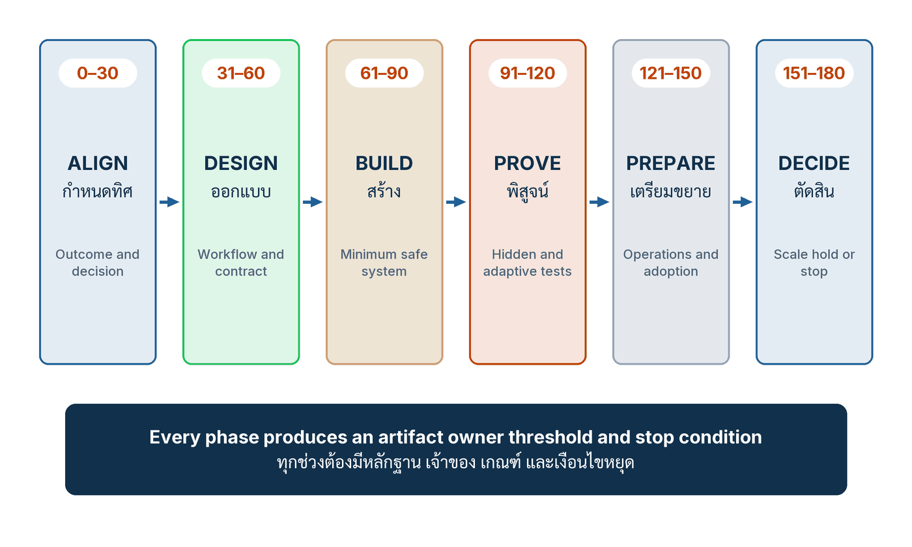

ในบทความนี้
- ไม่มีกฎหมายใดกำหนดลำดับ 180 วัน — แล้วทำไมปฏิทินนี้ยังคุ้มที่จะใช้
- หกช่วงกับกฎข้อเดียว — ทุกช่วงต้องมีหลักฐาน เจ้าของ เกณฑ์ และเงื่อนไขหยุด
- วันที่ 0–30 กำหนดทิศ — Mandate, Inventory ที่รวม Shadow Use และการตัดสินใจหนึ่งถึงสามเรื่อง
- วันที่ 31–60 ออกแบบ — แยกการตัดสินใจ ประเมินผลกระทบ และตั้งเกณฑ์ให้เสร็จก่อนสร้าง
- วันที่ 61–90 สร้าง — Minimum viable workflow ที่วัดได้ ย้อนดูได้ และถอยกลับได้
- เวิร์กช็อป The 180 day commitment room และตาราง Gate ของ 90 วันแรก
- ตัวชี้วัดสำคัญของ 90 วันแรก พร้อมช่อง Scorecard และรูปแบบความล้มเหลว
- ก้าวต่อไป — 90 วันหลังคือการให้โลกจริงตัดสินว่าอะไรสมควรได้ขยาย
In this post
- No law prescribes the 180-day sequence — so why is the calendar still worth running
- Six phases and one rule — every phase produces an artifact, owner, threshold and stop condition
- Days 0–30 Align — mandate, an inventory that includes shadow use, and one to three decisions
- Days 31–60 Design — decompose the decision, assess the impact, and set the thresholds before building
- Days 61–90 Build — a minimum viable workflow that is measured, reconstructable and reversible
- The 180 day commitment room workshop, and the gate table for the first 90 days
- The metrics that matter in the first 90 days, with a Scorecard column, and the failure patterns
- The road ahead — the second 90 days let the real world decide what earns the right to scale
🤔 ถ้าวันที่ 1 ของโครงการ AI คุณซื้อแพลตฟอร์ม วันที่ 180 คุณจะรู้อะไรที่วันนี้ยังไม่รู้?
ตอนที่แล้ว Suppliers, Cost and Footprint จบลงที่ประโยคซึ่งอ่านแล้วอึดอัดแต่ปฏิเสธไม่ได้ คือองค์กร outsource งานได้ แต่ outsource ความรับผิดชอบไม่ได้ ทุกอย่างที่ซีรีส์นี้เดินผ่านมาสิบเจ็ดตอน — ชั้นทั้งหก การตัดสินใจที่เกิดซ้ำ การออกแบบกระบวนงานใหม่ โรงงาน AI และข้อมูล ด่านอนุมัติ ระบบหลักฐานชุดเดียว ต้นทุนและรอยเท้าคาร์บอน — สุดท้ายต้องลงมาอยู่บนปฏิทินจริงที่มีวันที่ มีชื่อคน และมีวันที่ต้องกลับมาคุยกันใหม่ ไม่อย่างนั้นมันก็เป็นแค่สไลด์ที่สวยกว่าเดิม
คำตอบสั้น ๆ ของทั้งบทความคือ 90 วันแรกไม่ใช่เวลาสำหรับสร้างของ แต่เป็นเวลาสำหรับกำหนดว่าอะไรคือหลักฐานที่จะทำให้เราเชื่อ — กำหนดทิศให้มีเจ้าของและเห็นความจริงว่าองค์กรมี AI อะไรอยู่บ้าง ออกแบบการตัดสินใจกับเกณฑ์ตัดสินให้ครบก่อนเขียนโค้ด แล้วจึงสร้างระบบขั้นต่ำที่วัดได้และถอยกลับได้ ทั้งสามช่วงนี้ผลิตหลักฐาน ไม่ได้ผลิตฟีเจอร์ และนั่นคือสิ่งที่ทำให้ 90 วันหลังมีอะไรให้ตัดสิน
1. ไม่มีกฎหมายใดกำหนดลำดับ 180 วันนี้
ก่อนอื่นต้องพูดให้ชัดที่สุดตั้งแต่บรรทัดแรก เพราะเรื่องนี้จะถูกอ้างผิดได้ง่ายมากในที่ประชุม: ไม่มีกฎหมายหรือมาตรฐานใดกำหนดลำดับ 180 วันนี้ หนังสือ AI Transformation as an Organizational Core เรียกมันตรง ๆ ด้วยคำของตัวเองว่าเป็น การสังเคราะห์ของผู้เขียน (Author synthesis) ซึ่งในระบบป้ายหลักฐานของเล่มนี้แปลว่า "แบบจำลองเชิงปฏิบัติที่พัฒนาขึ้นในคู่มือเล่มนี้จากหลักฐานที่อ้างอิงและแนวคิด AI-as-a-Core"[1] ไม่ใช่ข้อกำหนดจากหน่วยงานกำกับดูแลใด และไม่ใช่ตารางเวลาที่มาตรฐานสากลฉบับไหนบังคับไว้
ประโยคขอบเขตของหนังสือเขียนไว้ว่า "ไม่มีกฎหมายหรือมาตรฐานใดกำหนดลำดับ 180 วันนี้ เป็นการสังเคราะห์ที่เชื่อม AI-as-a-Core กับ Lifecycle Risk, Continual Improvement, Workflow Redesign, Evaluation Gate และ Workforce Participation หน้าที่ตามกฎหมายต้องใช้ตลอดโครงการ"[1] — สังเกตประโยคสุดท้ายให้ดี เพราะมันคือส่วนที่คนอ่านข้ามบ่อยที่สุด ปฏิทินเป็นของผู้เขียน แต่ หน้าที่ตามกฎหมายไม่ได้รอถึงช่วงใดช่วงหนึ่ง องค์กรไม่ได้รับอนุญาตให้เลื่อนเรื่องข้อมูลส่วนบุคคล เรื่องสัญญากับผู้ให้บริการ หรือเรื่องสิทธิของพนักงาน ไปไว้ที่ "เฟสสอง" เพียงเพราะแผนบอกว่ายังอยู่วันที่ 12
ตัวเลข 180 จึงไม่ใช่ผลการวัดจากที่ไหนทั้งสิ้น มันไม่มีตัวส่วน ไม่มีกลุ่มตัวอย่าง ไม่มีการเทียบกับ "ระยะเวลาปกติ" ของโครงการแบบเดียวกัน และหนังสือก็ไม่ได้อ้างว่า 180 วันเร็วหรือช้ากว่าทางเลือกอื่น[1] สิ่งที่มันเป็นคือ ปฏิทินที่ออกแบบมาให้วงจรการเรียนรู้หมุนครบหนึ่งรอบก่อนขยาย — หกช่วง ช่วงละ 30 วัน โดย 90 วันแรกคือ กำหนดทิศ ออกแบบ สร้าง และ 90 วันหลังคือ พิสูจน์ เตรียมขยาย ตัดสิน ผมอยากให้ผู้อ่านถือมันแบบเดียวกับที่ถือ sprint length คือเป็นข้อตกลงเรื่องจังหวะ ไม่ใช่ข้อค้นพบเชิงประจักษ์
แล้วถ้ามันไม่ใช่กฎหมาย ทำไมยังต้องมีปฏิทิน
เพราะปฏิทินคือเครื่องมือผูกมัดตัวเอง ในงานที่ผมเข้าไปทบทวนให้หลายองค์กร ปัญหาแทบไม่เคยเป็นเรื่องที่ทีมไม่รู้ว่าควรทำอะไร ทุกคนรู้ว่าควรมี baseline ควรมีเจ้าของ ควรทดสอบก่อนปล่อย ปัญหาคือไม่มีวันที่ที่ผูกกับสิ่งเหล่านั้น พอไม่มีวันที่ คำว่า "เราจะทำให้ดี" ก็แปลว่า "เราจะทำเมื่อว่าง" และเวลาว่างในองค์กรที่กำลังเร่งเรื่อง AI คือสิ่งที่ไม่มีวันมาถึง หนังสือจึงไม่ได้เสนอ 180 วันในฐานะสูตร แต่ในฐานะโครงที่ทำให้คำถาม "ตอนนี้เรารู้อะไรแล้วบ้าง" ถูกถามหกครั้งภายในครึ่งปี แทนที่จะถูกถามครั้งเดียวตอนงบหมด
บรรทัดใต้ชื่อบทของหนังสือสรุปเจตนาไว้ประโยคเดียวว่า "Prove one complete learning loop before launching a large portfolio and let evidence decide what earns the right to scale."[1] ถ้าให้ผมขยายความเป็นภาษาไทยด้วยคำของผมเอง — หนังสือพิมพ์ประโยคนี้ไว้เป็นภาษาอังกฤษเท่านั้น ข้อความไทยต่อไปนี้จึงเป็นการขยายความของผม ไม่ใช่คำแปลที่หนังสือรับรอง — ใจความคือ ให้พิสูจน์ วงจรการเรียนรู้ (learning loop) ให้ครบหนึ่งรอบเสียก่อน แล้วปล่อยให้หลักฐานเป็นตัวตัดสินว่าอะไรได้สิทธิ์ขยาย ไม่ใช่ให้ความกระตือรือร้นของผู้บริหารหรือขนาดของสัญญาแพลตฟอร์มเป็นตัวตัดสิน
ข้อโต้แย้งที่ผมได้ยินบ่อยคือ "หนึ่งรอบมันช้าเกินไป คู่แข่งทำสิบเรื่องพร้อมกัน" ผมเข้าใจแรงกดดันนั้นดี แต่ขอชวนคิดกลับด้าน องค์กรที่ทำสิบเรื่องพร้อมกันโดยไม่มีค่าฐาน ไม่มีเกณฑ์ และไม่มีเงื่อนไขหยุด ไม่ได้เรียนรู้เร็วกว่าสิบเท่า มันเรียนรู้ ไม่ได้เลย เพราะเมื่อผลออกมาไม่ชัด จะไม่มีใครบอกได้ว่าเป็นเพราะโมเดล เพราะกระบวนงาน เพราะข้อมูล หรือเพราะกลุ่มผู้ใช้ ปัญหาไม่ใช่จำนวนโครงการ แต่คือจำนวนสมมติฐานที่ปล่อยลอยพร้อมกัน
💡 มุมมองของผม: หลักปฏิบัติข้อแรกในห้าข้อของบทนี้เขียนไว้สั้นมากว่า "สร้าง Learning Loop หนึ่งวงก่อน Portfolio ใหญ่ ลงลึกก่อนกระจาย"[1] — ผมถือประโยคนี้เป็นข้อสอบข้อแรกของทุกแผน AI ที่วางบนโต๊ะผม ถ้าแผนนั้นเปิดมาด้วยรายการยี่สิบ use case ที่จะเริ่มพร้อมกันในไตรมาสเดียว ผมยังไม่ต้องอ่านหน้าที่สอง เพราะแผนแบบนั้นไม่ได้ออกแบบมาให้เรียนรู้ มันออกแบบมาให้ดูขยัน
จังหวะเดียวกันนี้ปรากฏอยู่ในมาสเตอร์คลาสที่เป็นต้นทางของหนังสือด้วย ในช่วงท้ายของตอนนั้น ผู้บรรยายไม่แนะนำให้องค์กรที่เพิ่งเริ่มเปิดหัวด้วยการรวบรวม use case เป็นร้อยรายการ เพราะรายการยาวไม่ใช่กลยุทธ์ แต่ให้หา การตัดสินใจ ที่มีคุณค่าชัดและมีผลป้อนกลับชัด แล้วออกแบบกระบวนงานรอบมันใหม่ ไม่ใช่แปะ AI ลงในขั้นตอนเดิม จากนั้นจึงเก็บผลป้อนกลับ ปิดวงจรการเรียนรู้ แล้วค่อยขยายความสามารถไปยังการตัดสินใจอื่น[2] จังหวะที่เขาสรุปไว้ตอนปิดช่วงนั้นคือสิ่งที่ซีรีส์นี้ใช้ตลอดยี่สิบตอน — เริ่มแคบ เรียนรู้เร็ว ขยายลึก คลิปตอนนี้ยาว 52 นาที เผยแพร่เมื่อ 28 สิงหาคม 2569 และลิงก์ช่วงนาที 46:37 ยังเข้าถึงได้เมื่อผมตรวจสอบวันที่ 5 กันยายน 2569[2] ผมย้ำไว้ตรงนี้ว่าทั้งย่อหน้านี้เป็นการสรุปความจากคลิป ไม่ใช่การถอดคำพูด และในคลิปนั้น ไม่มี แผน 180 วัน ไม่มีชื่อช่วง และไม่มีโครงสร้าง Gate ใด ๆ ปฏิทินหกช่วงเป็นของหนังสือล้วน ๆ
สำหรับผู้ที่เพิ่งเข้าซีรีส์ตอนนี้ คำว่า การเปลี่ยนผ่านองค์กรด้วย AI (AI transformation) ในที่นี้ไม่ได้แปลว่าการติดตั้งเครื่องมือให้ครบทุกหน่วยงาน แต่แปลว่าการทำให้องค์กรตัดสินใจซ้ำ ๆ ได้ดีขึ้นอย่างพิสูจน์ได้ และ 90 วันแรกคือส่วนที่วางรากของคำว่า "พิสูจน์ได้" ทั้งหมด ถ้าคุณอยากทบทวนว่าจะเลือกการตัดสินใจไหนมาเข้าโปรแกรมนี้ ตอน #5 Decision Portfolio ว่าด้วย พอร์ตโฟลิโอการตัดสินใจ (decision portfolio) คือเครื่องมือคัดเลือกที่บทนี้ตั้งสมมติฐานว่าคุณทำมาแล้ว
2. หกช่วง กับกฎข้อเดียวที่ใช้กับทุกช่วง
ภาพต่อไปนี้คือทั้งโปรแกรมบนหน้าเดียว หกการ์ดเรียงจากซ้ายไปขวาคือหกช่วง ช่วงละ 30 วัน และแถบสีเข้มด้านล่างคือกฎข้อเดียวที่ใช้กับทุกช่วงเท่ากันหมด บทความนี้อยู่กับสามการ์ดแรก ส่วนสามการ์ดหลังเป็นเนื้อหาของตอนถัดไป
{kind=link}

ถ้าอ่านภาพนี้เร็ว ๆ มันดูเหมือน Gantt chart ทั่วไป แต่สิ่งที่ทำให้มันไม่ใช่ Gantt chart คือช่องที่ไม่มีในภาพ — ไม่มีช่อง "จำนวนคน" ไม่มีช่อง "% ความคืบหน้า" และไม่มีช่อง "ส่งมอบฟีเจอร์" สิ่งที่แต่ละช่วงต้องส่งมอบคือหลักฐาน ตารางข้างล่างคือชื่อและใจความของทั้งหกช่วงตามที่หนังสือกำหนดไว้ ผมยกมาทั้งหกเพื่อให้เห็นเส้นทางเต็ม แม้บทความนี้จะขยายเฉพาะสามช่วงแรก
| Days | Phase | ชื่อไทย | สิ่งที่ช่วงนั้นตอบ |
|---|---|---|---|
| 0–30 | ALIGN | กำหนดทิศ | ผลลัพธ์ที่ต้องการคืออะไร และการตัดสินใจใดเป็นตัวสร้างผลลัพธ์นั้น |
| 31–60 | DESIGN | ออกแบบ | กระบวนงานใหม่หน้าตาอย่างไร และสัญญาว่าด้วยหลักฐานกับการควบคุมคืออะไร |
| 61–90 | BUILD | สร้าง | ระบบขั้นต่ำที่ปลอดภัยพอจะทดสอบได้ ประกอบด้วยอะไรบ้าง |
| 91–120 | PROVE | พิสูจน์ | ผ่านชุดทดสอบที่ซ่อนไว้และชุดที่ปรับตามระบบหรือไม่ |
| 121–150 | PREPARE | เตรียมขยาย | งานปฏิบัติการและการยอมรับของผู้ใช้พร้อมแล้วหรือยัง |
| 151–180 | DECIDE | ตัดสิน | Scale ขยาย · Hold จำกัดขอบเขต · Stop ยุติ |
กฎที่พาดอยู่ใต้ทั้งหกการ์ดคือประโยคที่หนังสือพิมพ์ไว้ว่า "ทุกช่วงต้องมีหลักฐาน เจ้าของ เกณฑ์ และเงื่อนไขหยุด"[1] สี่คำนี้สั้นจนอ่านผ่านได้ง่าย แต่ผมอยากให้ลองใช้มันเป็นแบบตรวจกับโครงการ AI ที่องค์กรของคุณกำลังทำอยู่ตอนนี้ทีละคำ
หลักฐาน คือของที่จับต้องได้เมื่อจบช่วง ไม่ใช่รายงานความคืบหน้า ถ้าจบเดือนแรกแล้วสิ่งที่ส่งมอบคือสไลด์สรุปการประชุม นั่นไม่ใช่หลักฐาน แต่ถ้าเป็นบัญชีรายการระบบ AI ที่มีอยู่จริงพร้อมชื่อผู้ให้บริการและเส้นทางข้อมูล นั่นคือหลักฐาน เจ้าของ คือชื่อคนหนึ่งคน ไม่ใช่ชื่อหน่วยงาน เพราะหน่วยงานไม่เข้าประชุมและไม่เซ็นอะไรทั้งนั้น เกณฑ์ คือตัวเลขหรือเงื่อนไขที่เขียนไว้ ก่อน เห็นผล และ เงื่อนไขหยุด คือประโยคที่บอกล่วงหน้าว่าอะไรจะทำให้เราเลิก ในสี่ข้อนี้ ข้อสุดท้ายคือข้อที่หายไปบ่อยที่สุดในทุกองค์กรที่ผมเคยตรวจ
หลักปฏิบัติห้าประการของบทนี้
ข้อแรกอยู่ในกล่อง 💡 ด้านบนแล้ว ส่วนอีกสี่ข้อที่เหลือหนังสือเขียนไว้ดังนี้ ข้อสอง "Business และ Risk Ownership โอนไปทีม AI ไม่ได้ Accountability ตาม Decision" — ความรับผิดรับชอบ (accountability) เดินตามการตัดสินใจ ไม่ได้เดินตามเทคโนโลยี ทีม AI สร้างระบบได้ แต่รับผลของการตัดสินใจทางธุรกิจแทนเจ้าของสายงานไม่ได้ ข้อสาม "วัด Outcome ก่อนเพิ่ม Usage Login ไม่ใช่ Adoption และ Usage ไม่ใช่ Value" — ประโยคนี้ควรถูกแปะไว้ข้างแดชบอร์ดทุกอัน เพราะจำนวนคนล็อกอินคือตัวเลขที่หาได้ง่ายที่สุดและบอกอะไรน้อยที่สุด
ข้อสี่ "สร้าง Reusable Capability จากความต้องการที่พิสูจน์ หลีกเลี่ยง Platform Speculation" — ความสามารถที่ใช้ซ้ำได้ต้องโตขึ้นจากความต้องการที่พิสูจน์แล้ว ไม่ใช่จากการเดาว่าอนาคตจะต้องใช้อะไร และข้อห้า "หยุด Initiative ที่อ่อนอย่างโปร่งใส Portfolio Discipline คืนกำลังให้สิ่งมีคุณค่า"[1] — การหยุดต้องทำอย่างเปิดเผยและไม่ตีตราใคร เพราะถ้าการหยุดเท่ากับการยอมรับความล้มเหลวส่วนบุคคล จะไม่มีใครหยุดอะไรเลย และองค์กรจะจ่ายค่าดูแลของที่ไม่มีใครใช้ไปตลอดกาล ห้าข้อนี้เป็นชุดเดียวกันและหนังสือไม่ได้เรียงลำดับความสำคัญไว้ ผมจึงไม่จัดลำดับใหม่
โปรแกรมนี้กับ ระบบการจัดการ AI ต่างกันอย่างไร
คำถามที่ผู้บริหารถามผมทันทีที่เห็นภาพหกช่วงคือ "แล้วมันแทน ISO ได้ไหม" คำตอบคือไม่ และทั้งสองอย่างอยู่คนละระดับกัน ระบบการจัดการ AI (AI management system) ตามมาตรฐาน ISO/IEC 42001:2023 เป็นเรื่องของการวางระบบบริหารทั้งองค์กร — การวางแผน การตั้งวัตถุประสงค์ และการปรับปรุงอย่างต่อเนื่อง สำหรับองค์กรที่ให้บริการหรือใช้ผลิตภัณฑ์ที่มี AI เป็นส่วนประกอบ[3] ส่วนโปรแกรม 180 วันของหนังสือเป็นวิธี เริ่ม ระบบแบบนั้นด้วยของจริงหนึ่งชุด แทนที่จะเริ่มด้วยการเขียนนโยบายให้ครบก่อนแล้วค่อยหาที่ใช้
ในแง่สถานะ ISO/IEC 42001:2023 (Information technology — Artificial intelligence — Management system) มีวันเผยแพร่ธันวาคม 2023 และเมื่อตรวจสอบด้วยเบราว์เซอร์จริงวันที่ 5 กันยายน 2569 ยังเป็น Edition 1 สถานะ Published ที่ระยะ 60.60 ดูแลโดยคณะกรรมการ ISO/IEC JTC 1/SC 42[3] ผมจงใจไม่ยกข้อความของข้อกำหนดหรือรายการควบคุมใด ๆ มาไว้ในบทความนี้ และขอย้ำสิ่งที่หนังสือเองเตือนไว้ตั้งแต่บทแรกว่า "แต่กรอบเหล่านี้ไม่ได้ให้ประกันผลตอบแทนทางธุรกิจในอัตราใด"[1] การทำครบหกช่วงไม่ได้แปลว่าได้การรับรอง ไม่ได้แปลว่าผ่านการตรวจสอบ และไม่ได้แปลว่าจะได้ผลตอบแทนตามที่ใครสัญญาไว้ สิ่งที่มันให้คือวินัยของวงจร
3. วันที่ 0–30 · ALIGN กำหนดทิศ
หนังสือย่อทั้งเดือนแรกไว้ในย่อหน้าเดียวว่า "วันที่ 0 ถึง 30 สร้าง Mandate และเห็นความจริง แต่งตั้งผู้บริหารรับผิดชอบคุณค่าและความเสี่ยง พร้อม Business Decision Owner ที่มีอำนาจ ตั้ง Core Team เล็กจาก Business, Operations, Data and AI, Architecture, Security, Privacy and Legal, Risk, Change และตัวแทนกำลังคน สำรวจ AI ที่เปิดใช้ ซื้อมา ทดลอง และพนักงานนำมาเอง ทำแผนที่ Vendor, Data Flow, Obligation และ Incident เลือก Decision เป้าหมายหนึ่งถึงสามเรื่อง บันทึก Outcome, Cycle Time, Quality, Cost, Risk, Affected Group และ Feedback Delay ประกาศกติกาชั่วคราวและช่องทางปลอดภัยแจ้ง Shadow Use"[1]
คำสำคัญสองคำในประโยคแรกคือ Mandate และ เห็นความจริง อย่างแรกคืออำนาจ อย่างหลังคือข้อมูล และเดือนแรกล้มเหลวได้จากการขาดอย่างใดอย่างหนึ่ง องค์กรที่มีอำนาจแต่ไม่เห็นความจริงจะสั่งการบนภาพที่ผิด ส่วนองค์กรที่เห็นความจริงแต่ไม่มีอำนาจจะได้รายงานที่ถูกต้องซึ่งไม่มีใครทำอะไรกับมัน
สองบทบาทที่ต้องมีชื่อคน
บทบาทแรกคือ ผู้บริหารที่รับผิดชอบทั้งคุณค่าและความเสี่ยง ข้อสำคัญคือคำว่า "ทั้งสอง" เพราะเมื่อไรที่แยกกัน — คนหนึ่งไล่ผลลัพธ์ อีกคนไล่ความเสี่ยง — องค์กรจะได้สงครามระหว่างสองฝ่ายแทนที่จะได้การตัดสินใจ คนที่ต้องตอบทั้งคำถามว่า "ทำไมยังไม่เห็นผล" และ "ทำไมปล่อยให้เกิดเรื่องนี้" คือคนเดียวกัน นั่นแหละคือคนที่จะชั่งน้ำหนักได้จริง
บทบาทที่สองคือ Business Decision Owner ที่มีอำนาจปฏิบัติ คำว่ามีอำนาจปฏิบัติหมายความว่าเขาสั่งเปลี่ยนวิธีทำงานของทีมที่ทำงานนั้นจริงได้ ไม่ใช่แค่เข้าประชุมได้ ผมเจอกรณีนี้บ่อยมาก: องค์กรตั้งผู้จัดการโครงการ AI ที่เก่งมาก แต่ไม่มีอำนาจเปลี่ยน SOP ของฝ่ายปฏิบัติการ ผลคือระบบถูกสร้างเสร็จแล้วไม่มีใครเปลี่ยนวิธีทำงานมารับ สุดท้ายกลายเป็นหน้าจอที่เปิดทิ้งไว้ข้าง ๆ ระบบเดิม
รอบสองบทบาทนี้คือ Core Team เล็ก ๆ ที่หนังสือระบุองค์ประกอบไว้ครบเก้าด้าน — Business, Operations, Data and AI, Architecture, Security, Privacy and Legal, Risk, Change และ ตัวแทนกำลังคน[1] ด้านสุดท้ายคือด้านที่ถูกตัดออกก่อนเสมอเวลาคนบอกว่า "ทีมใหญ่เกินไป" ทั้งที่ เสียงและการมีส่วนร่วมของพนักงาน (worker voice) คือสิ่งที่ทำให้รู้ตั้งแต่เดือนแรกว่ากระบวนงานที่ออกแบบบนกระดาษจะเจออะไรในความเป็นจริง และคือสิ่งที่ทำให้การเปลี่ยนแปลงไม่ถูกต่อต้านตอนวันปล่อย
Inventory ที่ต้องรวมของที่พนักงานเอามาเอง
หนังสือกำหนดให้สำรวจ AI สี่ประเภทพร้อมกัน คือที่ เปิดใช้แล้ว ที่ ซื้อมา ที่ ทดลองอยู่ และที่ พนักงานนำมาใช้เอง[1] สามประเภทแรกหาไม่ยาก มันอยู่ในระบบจัดซื้อ ในทะเบียนทรัพย์สิน หรือในสไลด์ของทีมนวัตกรรม ประเภทที่สี่คือประเภทที่ทำให้ inventory ส่วนใหญ่ที่ผมเคยเห็นเป็นเอกสารที่ผิดตั้งแต่วันแรก เพราะมันนับเฉพาะของที่องค์กรรู้ตัวว่ามี
ในทางปฏิบัติ พนักงานเปิดแท็บเบราว์เซอร์ไปหาเครื่องมือฟรีแล้ววางเนื้อหางานลงไปทุกวัน ไม่ใช่เพราะจงใจฝ่าฝืน แต่เพราะมันช่วยให้งานเสร็จ และองค์กรไม่เคยบอกว่าอะไรใช้ได้อะไรใช้ไม่ได้ นี่คือเหตุผลที่หนังสือจับคู่สองสิ่งไว้ในประโยคสุดท้ายของช่วง ALIGN คือ กติกาชั่วคราว กับ ช่องทางปลอดภัยสำหรับแจ้ง Shadow Use อย่างแรกบอกว่าอะไรทำได้ อย่างหลังทำให้การบอกความจริงไม่ต้องแลกกับการโดนลงโทษ ถ้ามีแต่กติกาโดยไม่มีช่องทางปลอดภัย สิ่งที่ได้ไม่ใช่การเลิกใช้ แต่คือการใช้ต่อแบบเงียบกว่าเดิม
คู่กับ inventory คือแผนที่สี่ชั้น — Vendor, Data Flow, Obligation และ Incident ชั้น Vendor ตอบว่าใครถือของอะไรอยู่บ้าง ชั้น Data Flow ตอบว่าข้อมูลอะไรไหลออกนอกองค์กรและไปหยุดที่ไหน ชั้น Obligation ตอบว่ามีหน้าที่ตามกฎหมาย ตามสัญญา หรือตามกฎรายภาคอะไรผูกอยู่ และชั้น Incident ตอบว่าเคยเกิดอะไรผิดพลาดมาแล้วบ้าง ชั้นสุดท้ายมักถูกข้ามเพราะไม่มีใครอยากขุดเรื่องเก่า แต่มันคือชั้นที่บอกได้แม่นที่สุดว่าองค์กรนี้พังตรงไหนซ้ำ ๆ
เลือกหนึ่งถึงสามเรื่อง แล้วจดค่าฐานไว้ก่อนแตะอะไร
ช่วง ALIGN บังคับให้เลือก การตัดสินใจเป้าหมายหนึ่งถึงสามเรื่อง[1] แล้วบันทึกเจ็ดค่าของแต่ละเรื่องไว้เป็นค่าฐาน คือ Outcome, Cycle Time, Quality, Cost, Risk, Affected Group และ Feedback Delay ไม่ใช่เพราะสามเป็นเลขวิเศษ — หนังสือไม่ได้อ้างว่าเคยวัดมาว่าสามดีที่สุด และตัวเลขนี้ไม่มีตัวส่วนใด ๆ รองรับ — แต่เพราะรูปแบบความล้มเหลวข้อที่สองที่หนังสือระบุไว้คือ "รวบรวม Idea นับร้อย" และรายการยาวไม่ใช่กลยุทธ์
ค่าที่ผมอยากขีดเส้นใต้ในเจ็ดค่านั้นคือ Feedback Delay เพราะมันคือค่าที่ทำนายได้ดีที่สุดว่าโปรแกรมนี้จะเรียนรู้ได้จริงหรือไม่ ถ้าการตัดสินใจหนึ่งใช้เวลาเก้าเดือนกว่าจะรู้ว่าผลออกมาดีหรือไม่ดี วงจรการเรียนรู้จะไม่หมุนครบภายใน 180 วันไม่ว่าจะทำอะไรก็ตาม การเลือกงานที่ผลป้อนกลับกลับมาเป็นวันหรือสัปดาห์จึงไม่ใช่การเลือกงานง่าย แต่คือการเลือกงานที่โปรแกรมนี้เรียนรู้จากมันได้ทัน
และค่าฐานต้องจดไว้ ก่อน แตะระบบใด ๆ ประโยคนี้ฟังดูชัดเจนจนน่าเบื่อ แต่รูปแบบความล้มเหลวข้อ "ไม่มี Baseline" อยู่ในรายการของหนังสือด้วยเหตุผล เมื่อไม่มีค่าฐาน ทุกการอภิปรายหลังจากนั้นจะจบลงที่ความรู้สึกว่า "รู้สึกว่าเร็วขึ้นนะ" และไม่มีใครพิสูจน์หรือหักล้างมันได้
NIST AI RMF พูดเรื่องเดียวกันไหม
พูด แต่พูดคนละแบบ ฟังก์ชัน GOVERN ของ NIST AI RMF 1.0 มี 6 หมวดและ 19 หมวดย่อย และหลายข้อในนั้นตรงกับสิ่งที่ช่วง ALIGN เรียกร้องพอดี[4] ความต่างคือ NIST เขียนไว้เป็น ผลลัพธ์ที่ต้องเกิด ไม่ใช่ลำดับขั้นตอนและไม่ใช่ปฏิทิน ตารางข้างล่างคือการจับคู่ที่ผมทำขึ้นเองระหว่างข้อเรียกร้องของช่วง ALIGN กับหมวดย่อยของ NIST เพื่อให้ทีมที่ต้องรายงานต่อคณะกรรมการเห็นว่างานเดือนแรกไม่ได้ลอยอยู่นอกกรอบสากล
| ข้อเรียกร้องของช่วง ALIGN | NIST AI RMF · GOVERN | ผลลัพธ์ที่ NIST ระบุไว้ |
|---|---|---|
| ผู้บริหารรับผิดชอบคุณค่าและความเสี่ยง | GOVERN 2.3 | ผู้บริหารระดับสูงรับผิดชอบการตัดสินใจเรื่องความเสี่ยงที่เกี่ยวกับการพัฒนาและการนำระบบ AI ไปใช้ |
| Business Decision Owner และสายการรายงานที่ชัด | GOVERN 2.1 | บทบาท ความรับผิดชอบ และสายการสื่อสารเรื่องความเสี่ยง AI ถูกบันทึกไว้และชัดเจนต่อทุกคนในองค์กร |
| Core Team ที่มีความหลากหลาย รวมตัวแทนกำลังคน | GOVERN 3.1 | การตัดสินใจเรื่องความเสี่ยง AI ตลอดวงจรชีวิตมาจากทีมที่หลากหลายทั้งสาขาวิชา ประสบการณ์ และภูมิหลัง |
| ใครตรวจใคร และมนุษย์มีอำนาจตรงไหน | GOVERN 3.2 | มีนโยบายและกระบวนการกำหนดบทบาทของการทำงานร่วมกันระหว่างคนกับ AI และการกำกับดูแลระบบ |
| Inventory ระบบ AI ที่มีอยู่ | GOVERN 1.6 | มีกลไกทำบัญชีรายการระบบ AI และจัดสรรทรัพยากรตามลำดับความเสี่ยงขององค์กร |
| แผนที่ Obligation และประโยค "หน้าที่ตามกฎหมายใช้ตลอดโครงการ" | GOVERN 1.1 | ข้อกำหนดทางกฎหมายและกฎระเบียบที่เกี่ยวกับ AI ถูกทำความเข้าใจ บริหารจัดการ และบันทึกไว้ |
| ประกาศกติกาชั่วคราว | GOVERN 1.4 | กระบวนการบริหารความเสี่ยงและผลของมันถูกกำหนดผ่านนโยบายและการควบคุมที่โปร่งใส |
| แผนที่ Vendor และความเสี่ยงจากบุคคลที่สาม | GOVERN 6.1 | มีนโยบายและกระบวนการรองรับความเสี่ยง AI ที่เกี่ยวกับบุคคลภายนอก รวมถึงการละเมิดสิทธิของบุคคลที่สาม |
| แผนที่ Incident ที่เคยเกิด | GOVERN 4.3 | มีแนวปฏิบัติที่เอื้อให้ทดสอบระบบ AI ระบุเหตุการณ์ผิดปกติ และแบ่งปันข้อมูลได้ |
| ช่องทางปลอดภัยแจ้ง Shadow Use | ไม่มีหมวดย่อยใดตรงกับข้อนี้ | นี่เป็นข้อเสนอของหนังสือเอง ไม่ใช่ข้อกำหนดของ NIST และผมไม่ยกไปอ้างว่าเป็นของ NIST |
แถวสุดท้ายสำคัญพอ ๆ กับเก้าแถวบน เพราะเวลาคนทำสไลด์เทียบกรอบสากล มักมีแนวโน้มจะลากทุกอย่างให้ตรงกันไปหมด ช่องทางปลอดภัยสำหรับแจ้งการใช้ AI นอกระบบไม่มีหมวดย่อยของ GOVERN ข้อไหนพูดถึงโดยตรง มันเป็นข้อเสนอของหนังสือ และควรอ้างในฐานะนั้น
ในแง่สถานะของกรอบนี้: NIST เผยแพร่ AI Risk Management Framework (AI RMF 1.0, NIST AI 100-1) เมื่อวันที่ 26 มกราคม 2023 และเมื่อตรวจสอบวันที่ 5 กันยายน 2569 ยังคงเป็นเวอร์ชัน 1.0 — เป็นกรอบที่ NIST ระบุเองว่าใช้โดยสมัครใจ ไม่ผูกกับภาคส่วนหรือกรณีใช้งานใด ไม่ใช่กฎหมายและไม่ใช่การรับรอง[4] และ NIST ก็เขียนไว้เองว่าผู้ใช้อาจเลือกใช้เฉพาะบางหมวดหรือบางหมวดย่อยตามความเหมาะสม 19 หมวดย่อยนั้นจึงไม่ใช่เช็คลิสต์ที่ต้องติ๊กให้ครบภายในเดือนแรก และเช่นเดียวกับ ISO/IEC 42001 กรอบนี้ไม่ได้ให้ประกันผลตอบแทนทางธุรกิจในอัตราใด สิ่งที่มันให้คือภาษากลางสำหรับอธิบายว่าองค์กรกำกับดูแลอย่างไร
4. วันที่ 31–60 · DESIGN ออกแบบ
เดือนที่สองคือเดือนที่คนอยากข้ามมากที่สุด เพราะมันคือเดือนที่ไม่มีอะไรให้ demo หนังสือเขียนไว้ว่า "วันที่ 31 ถึง 60 ออกแบบ Decision Control และ Work แยกแต่ละ Decision เป็น Estimate, Judgment, Action, Outcome และ Feedback ออกแบบกรณีปกติ Exception, Appeal และ Human Authority ทำ Assessment ด้าน Privacy, Security, Legal, Ethics, Workforce, Supplier และ Environment ตามสัดส่วน กำหนด Baseline, Evaluation Case, Thai and Subgroup Test, Release Threshold, Monitoring และ Stop Condition ก่อน Build"[1]
คำสองคำท้ายสุดของย่อหน้านั้น — ก่อน Build — คือทั้งหมดของเดือนนี้ ทุกอย่างที่ระบุไว้ต้องเสร็จก่อนเขียนโค้ดบรรทัดแรก ไม่ใช่เพราะความเป็นระเบียบ แต่เพราะเกณฑ์ที่ตั้งขึ้น หลัง เห็นผลไม่ใช่เกณฑ์ มันคือคำอธิบายผลที่เกิดขึ้นแล้ว
แยกการตัดสินใจออกเป็นห้าส่วน
หนังสือให้แยกแต่ละการตัดสินใจออกเป็น Estimate, Judgment, Action, Outcome และ Feedback ซึ่งเป็นโครงเดียวกับที่ซีรีส์นี้ใช้ตั้งแต่ตอน #2 ประโยชน์ของการแยกในบริบทของโปรแกรม 180 วันคือมันบอกได้ทันทีว่า AI ควรเข้าไปอยู่ตรงไหน และ คนต้องอยู่ตรงไหน Estimate คือส่วนที่โมเดลทำได้ดีที่สุด Judgment คือส่วนที่ต้องชั่งเป้าหมายและผลกระทบ ซึ่งเป็นงานของคน Action คือจุดที่ผลจริงเกิดขึ้นกับโลกภายนอก Outcome คือสิ่งที่เกิดตามมา และ Feedback คือเส้นทางที่ผลนั้นเดินกลับมาเป็นข้อมูล
ทีมที่ข้ามการแยกนี้มักลงเอยด้วยการสร้างระบบที่ทำทั้งห้าอย่างพร้อมกันในกล่องเดียว แล้วเมื่อผลออกมาไม่ดีก็ไม่มีใครบอกได้ว่าค่าประเมินผิด ดุลพินิจผิด หรือผลป้อนกลับไม่เคยกลับมาถึงเลยตั้งแต่แรก
กรณีปกติ ข้อยกเว้น การอุทธรณ์ และอำนาจของมนุษย์
สี่อย่างนี้ต้องออกแบบพร้อมกัน ไม่ใช่ออกแบบกรณีปกติแล้วค่อยคิดเรื่องข้อยกเว้นทีหลัง เพราะในงานจริง สัดส่วนของงานที่เป็นข้อยกเว้นมักเป็นตัวกำหนดว่าระบบจะช่วยได้จริงหรือกลายเป็นภาระเพิ่ม ระบบที่จัดการกรณีปกติได้ดีเยี่ยมแต่โยนข้อยกเว้นทั้งหมดกลับไปให้คนโดยไม่มีบริบท ทำให้ภาระของคนหนักขึ้นทั้งที่ปริมาณงานลดลง เพราะสิ่งที่เหลืออยู่คือของยากล้วน ๆ
การอุทธรณ์ คือช่องที่คนซึ่งได้รับผลกระทบใช้โต้แย้งผลได้ และมันต้องมีตั้งแต่วันออกแบบ ไม่ใช่ตอนมีเรื่องร้องเรียน ส่วน การกำกับดูแลโดยมนุษย์ (human oversight) ต้องระบุให้ชัดว่าคนมีอำนาจอะไรบ้างในแต่ละจุด — ดูอย่างเดียว อนุมัติ ยับยั้ง หรือแก้ไข สี่คำนี้ไม่เหมือนกันเลย และการเขียนว่า "มีคนดูแลอยู่" โดยไม่ระบุว่าอำนาจแบบไหน คือวิธีที่นิยมที่สุดในการสร้างภาพว่ามีการกำกับดูแลทั้งที่ไม่มี
การประเมินผลกระทบ ตามสัดส่วน
หนังสือระบุ การประเมินผลกระทบ (impact assessment) ไว้เจ็ดด้าน และเติมคำว่า "ตามสัดส่วน" ไว้ท้ายประโยค คำนี้ทำงานสองทาง ทางหนึ่งมันป้องกันไม่ให้งานความเสี่ยงต่ำถูกถ่วงด้วยเอกสารหนาเป็นนิ้ว อีกทางมันไม่อนุญาตให้งานความเสี่ยงสูงผ่านด้วยแบบฟอร์มหน้าเดียว ในทางปฏิบัติ ผมแนะนำให้ตัดสินระดับความเข้มของ Assessment ในสัปดาห์แรกของเดือนนี้ แล้วบันทึกเหตุผลไว้ เพราะเมื่อถูกถามในภายหลังว่าทำไมงานนี้ประเมินแค่นี้ คำตอบที่ดีที่สุดคือบันทึกที่เขียนไว้ตอนยังไม่มีใครกดดัน
- Privacy — ข้อมูลส่วนบุคคลอะไรเข้าไปในระบบ ใครเห็นได้ เก็บนานแค่ไหน และไหลออกนอกองค์กรตรงไหน
- Security — ใครเข้าถึงระบบและข้อมูลได้ ทางเข้าที่ไม่ตั้งใจมีไหม และถ้าถูกโจมตีจะรู้ได้อย่างไร
- Legal — หน้าที่ตามกฎหมาย สัญญา และกฎรายภาคที่ผูกกับงานนี้โดยเฉพาะ
- Ethics — ใครได้ประโยชน์ ใครเสียประโยชน์ และความแตกต่างนั้นอธิบายได้ด้วยเหตุผลที่ยอมรับได้หรือไม่
- Workforce — งานของใครเปลี่ยน เปลี่ยนอย่างไร ต้องฝึกอะไรใหม่ และใครเป็นคนบอกพวกเขา
- Supplier — ผู้ให้บริการรายไหนอยู่ในเส้นทางนี้ สัญญาเขียนอะไรไว้ และย้ายออกได้ยากแค่ไหน
- Environment — ต้นทุนพลังงานและรอยเท้าคาร์บอนของทางเลือกที่กำลังจะเลือก
หกอย่างที่ต้องเสร็จก่อนเขียนโค้ดบรรทัดแรก
ส่วนสุดท้ายของเดือนนี้คือส่วนที่ผมถือว่าสำคัญที่สุดในทั้ง 90 วันแรก หนังสือระบุหกอย่างที่ต้องกำหนดให้เสร็จก่อน Build และผมขอวางเป็นตารางพร้อมคำถามที่แต่ละอย่างตอบ กับสิ่งที่จะเกิดขึ้นถ้าไม่มี
| Artifact | คำถามที่มันตอบ | ถ้าไม่มี จะเกิดอะไรขึ้น |
|---|---|---|
| Baseline | วันนี้ทำได้เท่าไร ก่อนที่เราจะแตะอะไร | ทุกผลลัพธ์กลายเป็นเรื่องเล่า ไม่มีใครพิสูจน์หรือหักล้างได้ |
| Evaluation Case | เราจะเอาอะไรมาทดสอบ และเคสเหล่านั้นมาจากไหน | ทดสอบด้วยตัวอย่างที่ทีมเลือกเอง ซึ่งคือตัวอย่างที่ระบบทำได้อยู่แล้ว |
| Thai and Subgroup Test | ระบบทำงานกับภาษาไทยจริงและกับกลุ่มย่อยแต่ละกลุ่มได้เท่ากันหรือไม่ | ค้นพบตอนใช้จริงว่ากลุ่มหนึ่งได้บริการแย่กว่าอีกกลุ่มอย่างเป็นระบบ |
| Release Threshold | ต้องได้เท่าไรถึงจะปล่อย | ตัวเลขถูกตีความใหม่ทุกครั้งที่ผลออกมาไม่ถึง |
| Monitoring | หลังปล่อยแล้ว เราจะรู้ได้อย่างไรว่ามันยังดีอยู่ | ระบบเสื่อมเงียบ ๆ จนกว่าจะมีคนร้องเรียน |
| Stop Condition | อะไรจะทำให้เราหยุด และใครมีอำนาจสั่งหยุด | ไม่มีใครหยุด เพราะการหยุดกลายเป็นการตัดสินใจส่วนบุคคลที่ไม่มีใครอยากรับ |
5. วันที่ 61–90 · BUILD สร้าง
เดือนที่สามคือเดือนแรกที่มีของให้จับ หนังสือเขียนไว้ว่า "วันที่ 61 ถึง 90 สร้างและทดสอบในขอบเขต สร้าง Instrumented Minimum Viable Workflow ด้วย Architecture ที่อนุมัติ จัดทำ System Card, Release Manifest, Data Lineage, Access Control, Trace, Evaluation Set และ Rollback ทดสอบ Offline ท้าทาย Failure ที่น่าเชื่อ ตรวจ Privacy และ Security และใช้ Shadow Mode หากเหมาะ ฝึก Pilot เรื่อง Verification และ Escalation"[1]
Instrumented Minimum Viable Workflow แปลว่าอะไรกันแน่
คำนี้มีสามส่วนและทุกส่วนมีน้ำหนัก Minimum คือเล็กที่สุดเท่าที่ยังตอบคำถามได้ ไม่ใช่เล็กที่สุดเท่าที่ทำเสร็จทัน Viable คือทำงานได้ครบวงจรจริงตั้งแต่รับเรื่องจนถึงผลลัพธ์ ไม่ใช่ prototype ที่ทำงานได้เฉพาะเส้นทางที่เตรียมไว้สาธิต และ Workflow คือกระบวนงานทั้งสาย ไม่ใช่ขั้นตอนเดียว — ประเด็นนี้คือหัวใจของตอน #6 ทั้งตอน คือเราออกแบบกระบวนงานใหม่ ไม่ได้แปะ AI ลงในขั้นตอนเดิม
ส่วนคำว่า Instrumented คือส่วนที่ถูกตัดออกบ่อยที่สุดเวลาที่เวลาไม่พอ มันหมายถึงระบบที่มี ความสามารถในการสังเกตระบบ (observability) ติดตั้งมาตั้งแต่ต้น ไม่ใช่ต่อเติมทีหลัง ถ้าเราสร้างระบบไว้ก่อนแล้วค่อยคิดว่าจะวัดอะไร สิ่งที่จะได้คือระบบที่วัดเฉพาะสิ่งที่บังเอิญวัดได้ ซึ่งแทบไม่เคยตรงกับสิ่งที่เราต้องรู้ในวันตัดสิน
เจ็ดสิ่งที่ต้องมีตั้งแต่วันแรกที่ระบบเดินได้
| Artifact | คืออะไร | ทำไมต้องมีตั้งแต่ 61–90 ไม่ใช่ทีหลัง |
|---|---|---|
| System Card | เอกสารหน้าเดียวที่บอกว่าระบบนี้ทำอะไร ไม่ทำอะไร ใช้กับใคร และมีข้อจำกัดอะไร | เป็นเอกสารเดียวที่คนนอกทีมอ่านแล้วเข้าใจขอบเขต และเป็นฐานของทุกการทบทวนหลังจากนี้ |
| Release Manifest | บันทึกว่าเวอร์ชันที่ปล่อยประกอบด้วยโมเดล ข้อมูล บริบท และค่าคอนฟิกอะไรบ้าง | ถ้าไม่มี เมื่อผลเปลี่ยนจะไม่มีทางรู้ว่าอะไรเปลี่ยน และการเทียบผลข้ามสัปดาห์จะไร้ความหมาย |
| Data Lineage | เส้นทางว่าข้อมูลแต่ละชิ้นมาจากไหนและถูกแปลงอย่างไรก่อนถึงระบบ | เป็นสิ่งที่ต้องใช้ตอบคำถามเรื่องข้อมูลส่วนบุคคลและตอนต้องลบหรือแก้ข้อมูลย้อนหลัง |
| Access Control | ใครเรียกระบบได้ ด้วยสิทธิ์อะไร และทำอะไรได้บ้าง | สิทธิ์ที่กว้างไว้ก่อนแล้วค่อยรัดทีหลัง คือสิทธิ์ที่จะไม่มีวันถูกรัด |
| Trace | ร่องรอยที่สร้างเหตุการณ์ย้อนกลับได้ ของแต่ละครั้งที่ระบบทำงาน | เป็นวัตถุดิบเดียวที่ใช้สอบสวนได้เมื่อเกิดเรื่อง และเก็บย้อนหลังไม่ได้ |
| Evaluation Set | ชุดเคสที่ใช้วัดผลอย่างเป็นระบบ ตามที่ออกแบบไว้ในเดือนที่แล้ว | ถ้าชุดนี้ถูกสร้างในเดือนนี้แทนเดือนที่แล้ว มันจะถูกสร้างให้ระบบผ่าน |
| Rollback | ทางกลับไปสู่สภาพก่อนหน้าที่ทดสอบแล้วว่าใช้ได้จริง | เงื่อนไขหยุดที่ไม่มีทางถอยรองรับ คือเงื่อนไขหยุดที่ไม่มีใครกล้าใช้ |
ในเจ็ดข้อนี้ ข้อที่ผมเห็นถูกเลื่อนบ่อยที่สุดคือ Rollback ด้วยเหตุผลว่า "ยังไม่ได้ปล่อยจริง เดี๋ยวค่อยทำ" ปัญหาคือเมื่อถึงวันที่ต้องใช้ มันไม่ใช่วันที่ว่าง มันคือวันที่กำลังมีเรื่อง และเส้นทางถอยที่ไม่เคยถูกซ้อมจะไม่ทำงานพอดีในวันนั้น
ทดสอบก่อนให้โลกจริงเห็น
หนังสือระบุการทดสอบไว้สี่แบบในเดือนนี้ แบบแรกคือ ทดสอบ Offline กับชุดที่ออกแบบไว้ แบบที่สองคือ ท้าทาย Failure ที่น่าเชื่อ — ไม่ใช่การจินตนาการภัยพิบัติ แต่คือการหยิบรูปแบบความล้มเหลวที่มีเหตุผลจะเกิดจริงกับงานนี้มาทดสอบทีละแบบ แบบที่สามคือ ตรวจ Privacy และ Security ซึ่งต้องเป็นการตรวจโดยคนที่ไม่ได้สร้างระบบ และแบบที่สี่คือ Shadow Mode คือให้ระบบทำงานคู่ขนานไปกับกระบวนการเดิมโดยไม่มีผลจริงต่อโลกภายนอก แล้วเทียบผลของสองเส้นทาง
Shadow mode คือเครื่องมือที่ผมชอบที่สุดในเดือนนี้ เพราะมันให้ข้อมูลจากงานจริงโดยไม่ต้องให้ใครแบกความเสี่ยงจริง แต่มันมีเงื่อนไขที่ต้องระวัง คือถ้าคนที่ทำงานอยู่รู้ว่ามีระบบเงาดูอยู่แล้วเริ่มปรับพฤติกรรมตาม สิ่งที่วัดได้จะไม่ใช่ผลของระบบอีกต่อไป และหนังสือก็เติมคำว่า "หากเหมาะ" ไว้ด้วยเหตุผล — งานบางประเภทรันเงาไม่ได้จริง ๆ เช่นงานที่ผลลัพธ์ขึ้นกับการโต้ตอบกับผู้ใช้แบบสด
ข้อสุดท้ายของเดือนคือ ฝึกกลุ่ม Pilot เรื่อง Verification และ Escalation สังเกตว่าหนังสือไม่ได้เขียนว่าฝึก "วิธีใช้งาน" แต่เขียนว่าฝึกเรื่องการตรวจสอบและการส่งต่อ ความต่างนี้สำคัญมาก การฝึกใช้งานสอนให้คนกดปุ่มถูก การฝึกตรวจสอบสอนให้คนรู้ว่าเมื่อไรไม่ควรเชื่อผลที่เห็น และการฝึกส่งต่อสอนให้คนรู้ว่าเมื่อเจอสิ่งผิดปกติแล้วต้องบอกใครภายในกี่ชั่วโมง สองอย่างหลังคือสิ่งที่ทำให้กลุ่ม Pilot กลายเป็นแหล่งหลักฐาน ไม่ใช่แค่กลุ่มผู้ใช้กลุ่มแรก
6. เวิร์กช็อป The 180 day commitment room
เนื้อหาทั้งสามช่วงข้างบนจะกลายเป็นบทความที่อ่านเพลินแล้วไม่มีอะไรเกิดขึ้น ถ้าไม่มีห้องที่ตัดสินมันจริง ๆ หนังสือจึงปิดบทด้วยเวิร์กช็อปที่เรียกว่า The 180 day commitment room — ผมชอบชื่อนี้เพราะมันไม่ได้ชื่อว่า planning room สิ่งที่ต้องออกจากห้องนี้ไม่ใช่แผน แต่คือ ข้อผูกพัน และข้อผูกพันต่างจากแผนตรงที่มันมีชื่อคนกำกับและมีวันที่
วาระของห้องนี้มีเจ็ดขั้นตามลำดับที่หนังสือวางไว้[1] ผมเติมคอลัมน์ "สิ่งที่ต้องได้ออกมา" เป็นของผมเอง เพื่อให้ผู้อ่านตรวจได้ว่าแต่ละขั้นจบจริงหรือแค่คุยจบ
| Step | สิ่งที่ต้องตัดสินในห้อง | สิ่งที่ต้องได้ออกมา |
|---|---|---|
| 1 | กำหนด Strategic Outcome และเส้นที่ห้ามข้าม (Nonnegotiable Boundary) | ผลลัพธ์เชิงกลยุทธ์หนึ่งประโยค และรายการเส้นแดงที่ไม่แลกกับความเร็ว |
| 2 | จัดอันดับการตัดสินใจที่เป็นตัวเลือก ด้วย Value, Frequency, Data, Feedback และ Risk | ตารางจัดอันดับที่เห็นห้าเกณฑ์แยกกัน ไม่ยุบเป็นคะแนนเดียว |
| 3 | เลือกหนึ่งถึงสามเรื่อง พร้อมบันทึกค่าฐาน | ค่าฐานเจ็ดค่าของแต่ละเรื่อง จดไว้ก่อนแตะระบบใด ๆ |
| 4 | ระบุ Owner, กลุ่มที่ได้รับผลกระทบ, Obligation และอำนาจของมนุษย์ | ชื่อคน ไม่ใช่ชื่อหน่วยงาน และรายการหน้าที่ที่ผูกกับงานนั้นโดยเฉพาะ |
| 5 | กำหนด Gate, หลักฐาน และ Stop Condition ของทั้งหกช่วง | ตาราง Gate ที่มีวันที่จริงในปฏิทินของทุกคนที่เกี่ยวข้อง |
| 6 | จัดคน เวลาที่กันไว้จริง (Protected Time) และงบสร้างความสามารถ | ชื่อคนพร้อมสัดส่วนเวลาที่ปลดจากงานเดิมแล้วจริง |
| 7 | บันทึกข้อผูกพัน 30 วัน และวัน Executive Review ครั้งแรก | รายการสิ่งที่จะเสร็จใน 30 วัน และวันที่ประชุมทบทวนที่ส่งคำเชิญแล้ว |
ผลลัพธ์ของห้องตกลง 180 วันจึงไม่ใช่สไลด์ แต่คือ ข้อผูกพัน 30 วัน และ วัน Executive Review ครั้งแรกที่มีวันที่จริงอยู่ในปฏิทิน[1] — นั่นคือขั้นตอนสุดท้ายของเวิร์กช็อปตามที่หนังสือเขียนไว้ตรง ๆ ผมเน้นคำว่า "ส่งคำเชิญแล้ว" ในตาราง เพราะประสบการณ์บอกว่าวันประชุมที่ตกลงกันด้วยวาจาในห้องแล้วไม่มีใครกดส่งคำเชิญ มีอัตราการเกิดขึ้นจริงต่ำอย่างน่าตกใจ
ขั้นที่ผมอยากให้ระวังที่สุดคือขั้นที่หก คำว่า Protected Time ไม่ได้แปลว่าใส่ชื่อคนลงในโครงการ แต่แปลว่าปลดงานเดิมออกจากคนนั้นจริง ๆ ตามสัดส่วนที่ระบุ ถ้าองค์กรใส่ชื่อคนเก่งห้าคนไว้ในโปรแกรมโดยที่ทั้งห้ายังต้องทำงานประจำเต็มร้อย โปรแกรมนี้จะเดินด้วยเวลาที่เหลือจากงานอื่น ซึ่งแปลว่ามันจะเดินเฉพาะสัปดาห์ที่ไม่มีอะไรด่วน และในองค์กรส่วนใหญ่ไม่มีสัปดาห์แบบนั้น
ตาราง Gate ของ 90 วันแรก
คำว่า Gate ในตารางนี้คือ ด่านอนุมัติการนำระบบออกใช้ (release gate) ในรูปแบบย่อ คือจุดที่มีคนหนึ่งคนตัดสินด้วยหลักฐานที่ประกาศไว้ล่วงหน้าว่าจะเดินต่อหรือไม่ ตัวด่านอนุมัติเต็มรูปแบบเป็นเนื้อหาของตอน #15 ส่วนที่ต้องมีในโปรแกรม 180 วันคือวันที่และเจ้าของ
| Phase | Artifact (ตามหนังสือ) | Owner (ตัวอย่าง) | Threshold (ตัวอย่าง) | Stop condition (ตัวอย่าง) | Gate date |
|---|---|---|---|---|---|
| ALIGN 0–30 |
Inventory ระบบ AI สี่ประเภท · แผนที่ Vendor, Data Flow, Obligation, Incident · ค่าฐานของการตัดสินใจที่เลือก · กติกาชั่วคราว · ช่องทางแจ้ง Shadow Use | ผู้บริหารที่รับผิดชอบคุณค่าและความเสี่ยง | ครอบคลุมทุกหน่วยงาน และทุกการตัดสินใจที่เลือกมีค่าฐานครบเจ็ดค่า | ไม่มีผู้บริหารคนใดยอมเป็นเจ้าของการตัดสินใจที่เลือก | วันที่ 30 |
| DESIGN 31–60 |
การแยกการตัดสินใจห้าส่วน · กระบวนงานใหม่พร้อมข้อยกเว้นและการอุทธรณ์ · Assessment เจ็ดด้านตามสัดส่วน · Baseline, Evaluation Case, Thai and Subgroup Test, Release Threshold, Monitoring, Stop Condition | Business Decision Owner | หกอย่างก่อน Build ครบและผ่านการทบทวนโดยคนนอกทีมสร้าง | ไม่มีชุดทดสอบภาษาไทยหรือชุดทดสอบรายกลุ่มย่อยที่ยอมรับได้ | วันที่ 60 |
| BUILD 61–90 |
Instrumented minimum viable workflow · System Card, Release Manifest, Data Lineage, Access Control, Trace, Evaluation Set, Rollback · ผลทดสอบ Offline และ Shadow Mode · บันทึกการฝึกกลุ่ม Pilot | หัวหน้าทีมวิศวกรรม ร่วมกับเจ้าของความเสี่ยง | ผ่านชุดประเมินที่ประกาศไว้ และซ้อม Rollback สำเร็จอย่างน้อยหนึ่งครั้ง | Trace ประกอบเหตุการณ์ย้อนกลับไม่ได้ หรือทางถอยยังไม่เคยถูกทดสอบ | วันที่ 90 |
วิธีอ่านตารางนี้ที่ผมแนะนำคืออ่านคอลัมน์ เงื่อนไขหยุด ก่อนคอลัมน์อื่น เพราะมันคือคอลัมน์ที่บอกว่าองค์กรจริงจังแค่ไหน เงื่อนไขหยุดที่เขียนว่า "ถ้าผลไม่เป็นที่น่าพอใจ" ไม่ใช่เงื่อนไขหยุด มันคือช่องว่างที่รอให้คนเสียงดังที่สุดเติม ส่วนเงื่อนไขหยุดที่เขียนว่า "ถ้า Trace ประกอบเหตุการณ์ย้อนกลับไม่ได้" คือประโยคที่ตรวจได้ในสามสิบวินาทีและเถียงไม่ได้
อีกเรื่องที่ห้องนี้ต้องตกลงคือ ใครมีอำนาจสั่งหยุด ในหลายองค์กร คนที่ตรวจพบปัญหาไม่ใช่คนที่มีอำนาจสั่งหยุด และช่องว่างระหว่างสองคนนี้คือที่ที่เหตุการณ์เล็ก ๆ กลายเป็นเรื่องใหญ่ ถ้าจะให้เงื่อนไขหยุดทำงานจริง ต้องมีชื่อคนที่กดหยุดได้โดยไม่ต้องขออนุมัติจากคนที่มีส่วนได้เสียกับการเดินหน้าต่อ
7. ตัวชี้วัดสำคัญของ 90 วันแรก
หนังสือให้รายการตัวชี้วัดของบทนี้ไว้เป็นชุดเดียวยาว ๆ ภายใต้คำสั่งว่าให้ "ใช้มุมมองสมดุล" โดยไม่ได้แบ่งว่าตัวไหนของช่วงไหน[1] สี่ตัวแรกของรายการนั้นคือสี่ตัวที่วัดได้จริงภายใน 90 วันแรก ส่วนที่เหลือต้องรอให้ระบบออกสู่การใช้งานก่อน ผมจึงยกมาเฉพาะสี่ตัวนี้ และเติมคอลัมน์ Scorecard เพื่อให้เห็นว่ามันไปขยับช่องไหนบนกระดานคะแนนหกช่องขององค์กร — การจับคู่กับช่องคะแนนเป็นการตัดสินเชิงบรรณาธิการของผมเอง หนังสือพิมพ์รายการนี้ไว้เป็นรายการเดียวไม่แบ่งช่อง
| Metric | วัดอย่างไร | สัญญาณเตือนที่ต้องดู | Scorecard |
|---|---|---|---|
| Inventory Coverage | สัดส่วนหน่วยงานที่ส่งบัญชีรายการระบบ AI ครบทั้งสี่ประเภท รวมของที่พนักงานนำมาเอง | ตัวเลขสวยเกินจริงในหน่วยงานที่ไม่มีใครแจ้ง Shadow Use เลยสักรายการ | Risk |
| Initiative ที่มี Business และ Risk Owner | สัดส่วนงานที่มีชื่อคนจริงในทั้งสองบทบาท ไม่ใช่ชื่อหน่วยงาน | คนเดียวถูกใส่ชื่อเป็นเจ้าของสิบงานพร้อมกัน ซึ่งเท่ากับไม่มีเจ้าของ | People |
| Baseline และ Evaluation Plan | สัดส่วนการตัดสินใจที่เลือกซึ่งมีค่าฐานและแผนประเมินครบก่อนเริ่ม Build | ค่าฐานที่ถูกเติมย้อนหลังหลังจากระบบเริ่มทำงานแล้ว | Learning |
| Time to Classification | เวลาตั้งแต่พบระบบ AI ตัวใหม่จนจำแนกความเสี่ยงและระบุเจ้าของได้ | ค่าเฉลี่ยดีขึ้นเพราะเลิกนับเคสยากออกจากตัวหาร | Quality |
ในสี่ตัวนี้ ตัวที่ถูกอ่านผิดง่ายที่สุดคือ Inventory Coverage เพราะมันเป็นตัวเลขที่ทำให้สวยได้ง่ายมาก หน่วยงานที่ตอบว่า "เราไม่มีการใช้ AI นอกระบบเลย" ทำให้ตัวเลขความครอบคลุมดูดี ทั้งที่ในทางปฏิบัติมันเป็นสัญญาณตรงกันข้าม คือช่องทางแจ้งยังไม่ปลอดภัยพอให้ใครกล้าใช้ ผมจึงแนะนำให้ดูตัวเลขนี้คู่กับจำนวนรายการที่แจ้งเข้ามาผ่านช่องทางปลอดภัยเสมอ ศูนย์รายการไม่ใช่ข่าวดี
อีกตัวที่ควรอ่านอย่างระวังคือ Time to Classification เพราะเป็นตัวชี้วัดที่ปรับให้ดูดีได้ด้วยการเปลี่ยนนิยามของตัวหาร ถ้าเดือนนี้เร็วขึ้นสามเท่า คำถามแรกที่ควรถามไม่ใช่ "ทำอย่างไร" แต่คือ "เดือนนี้เรานับอะไรบ้าง และเลิกนับอะไรไป"
รูปแบบความล้มเหลว
หนังสือระบุรูปแบบความล้มเหลวของบทนี้ไว้สิบข้อ[1] ผมยกมาทั้งสิบเพราะแต่ละข้อชี้ไปยังช่วงเวลาที่ต่างกันของโปรแกรม และเกือบทุกข้อผมเคยเห็นกับตาอย่างน้อยหนึ่งครั้ง
- เริ่มจากซื้อ Platform — ตัดสินใจเรื่องเครื่องมือก่อนรู้ว่าจะแก้การตัดสินใจอะไร ทำให้ทุกอย่างหลังจากนั้นต้องหาเหตุผลมารองรับสิ่งที่ซื้อไปแล้ว
- รวบรวม Idea นับร้อย — ได้รายการที่ยาวจนดูเหมือนกลยุทธ์ แต่ไม่มีใครมีเวลาพิสูจน์แม้แต่รายการเดียวให้ครบวง
- เลือก Demo คุณค่าต่ำ — เลือกงานที่ทำง่ายเพื่อให้มีอะไรไปแสดง แล้วองค์กรก็สรุปจากงานคุณค่าต่ำว่า AI ให้ผลตอบแทนต่ำ
- มอบทุกอย่างให้ IT — ผลักงานทั้งก้อนไปยังหน่วยงานที่ไม่มีอำนาจเปลี่ยนกระบวนงานของสายธุรกิจ แล้วแปลกใจว่าทำไมกระบวนงานไม่เปลี่ยน
- เลื่อน Legal, Security หรือ Workforce — เก็บสามเรื่องนี้ไว้ทีหลังเพราะมันทำให้ช้า แล้วต้องรื้อทั้งการออกแบบตอนใกล้ปล่อย
- สับสน Login กับ Adoption — รายงานจำนวนผู้เข้าใช้เป็นหลักฐานของการยอมรับ ทั้งที่มันบอกได้แค่ว่ามีคนเปิดดู
- ไม่มี Baseline — เริ่มโดยไม่จดว่าวันนี้ทำได้เท่าไร ทำให้ทุกข้อสรุปหลังจากนั้นเป็นเรื่องเล่า
- ขยายก่อน Feedback — ขยายไปหน่วยงานที่สองและสามก่อนที่ผลจากหน่วยงานแรกจะกลับมาถึง จึงขยายความผิดพลาดไปพร้อมกัน
- ปฏิเสธหยุดกรณีอ่อน — ปล่อยให้งานที่หลักฐานอ่อนเดินต่อเพราะการหยุดถูกมองว่าเป็นความล้มเหลวของคน ไม่ใช่ผลของหลักฐาน
- สร้าง Platform ใหญ่จนไม่มี Decision ใดดีขึ้นในหกเดือน — ข้อสุดท้ายและข้อที่แพงที่สุด
ข้อสุดท้ายควรอ่านคู่กับตัวเลข 180 วันของบทนี้ เพราะหกเดือนคือช่วงเวลาราวเดียวกัน ต่างกันแค่ว่าใช้ไปกับอะไร — ใช้ไปกับการสร้างแพลตฟอร์ม หรือใช้ไปกับการทำให้การตัดสินใจหนึ่งถึงสามเรื่องดีขึ้นอย่างพิสูจน์ได้ ผมขอย้ำสิ่งที่หนังสือระวังไว้ด้วยว่า รายการสิบข้อนี้เป็น รายการรูปแบบจากประสบการณ์ ไม่ใช่ผลการศึกษา หนังสือไม่ได้บอกว่าแต่ละรูปแบบเกิดขึ้นบ่อยแค่ไหน กับกี่องค์กร หรือด้วยความน่าจะเป็นเท่าไร ใครก็ตามที่หยิบรายการนี้ไปแล้วเติมตัวเลขเปอร์เซ็นต์เข้าไปข้างหน้า กำลังเติมสิ่งที่ไม่มีในต้นฉบับ
8. ก้าวต่อไป
ถ้าจะสรุปทั้งบทเป็นการเปลี่ยนวิธีทำงานอย่างเดียว ผมจะเลือกข้อนี้: เปลี่ยนคำถามเปิดโครงการ AI จาก "เราจะเริ่มด้วยเครื่องมืออะไร" เป็น "วันที่ 90 เราจะถือหลักฐานอะไรอยู่ในมือ และใครเป็นคนถือ" คำถามแรกผลิตสัญญาจัดซื้อ คำถามที่สองผลิตโปรแกรมที่ตัดสินใจได้เมื่อถึงเวลา
สิ่งที่ทำได้ทันทีในสัปดาห์หน้ามีสามอย่าง หนึ่ง เขียนชื่อคนสองคนลงบนกระดาษ — ผู้บริหารที่รับผิดชอบทั้งคุณค่าและความเสี่ยง กับเจ้าของการตัดสินใจที่มีอำนาจปฏิบัติ ถ้าเขียนไม่ได้ นั่นคืองานชิ้นแรกของคุณ ไม่ใช่การเลือกโมเดล สอง เปิดสเปรดชีตเดียวแล้วเริ่ม inventory จากประเภทที่สี่ก่อน คือของที่พนักงานนำมาใช้เอง เพราะสามประเภทแรกหาได้จากระบบจัดซื้ออยู่แล้ว และสาม หยิบเอกสารอนุมัติโครงการ AI ฉบับล่าสุดขึ้นมาแล้วหาบรรทัด "เงื่อนไขหยุด" ถ้าไม่มี ให้เขียนขึ้นมาหนึ่งบรรทัดวันนี้ ตอนที่ยังไม่มีใครมีส่วนได้เสียกับคำตอบ
สิ่งที่ 90 วันแรกไม่ได้ให้คือคำตอบว่างานนี้ควรขยายหรือไม่ มันให้แค่ระบบที่พร้อมจะถูกตัดสิน 90 วันหลัง — พิสูจน์ เตรียมขยาย ตัดสิน — คือส่วนที่ปล่อยให้โลกจริงเป็นคนตอบ ด้วยชุดทดสอบที่ทีมไม่เคยเห็น ด้วยการปล่อยแคบ ๆ ที่ถอยกลับได้ และด้วยการทบทวนวันที่ 180 ที่ต้องเลือกหนึ่งในไม่กี่ทาง คำถามข้อสุดท้ายในแปดข้อของหนังสือถามไว้ตรง ๆ ว่า "What deserves to scale reshape pause or stop"[1] — อะไรสมควรได้ขยาย ออกแบบใหม่ ชะลอ หรือยุติ โดยหนังสือพิมพ์คำถามทั้งแปดข้อไว้เป็นภาษาอังกฤษเท่านั้น คำไทยที่ผมวางคู่ไว้เป็นของผมเอง ไม่ใช่ถ้อยคำของหนังสือ ข้อสังเกตเล็ก ๆ ที่ผมคิดว่าควรบันทึกไว้คือ คำถามข้อนี้ในหน้าสรุปของหนังสือใช้คำว่า pause ขณะที่บทที่ 12 เองใช้คำว่า hold ผมจึงยกตามแหล่งที่อ้างในแต่ละที่ และไม่กลืนสองคำนี้ให้เป็นคำเดียวกัน
🎯 สิ่งสำคัญที่ต้องจำ
- Author synthesis = ไม่มีกฎหมายหรือมาตรฐานใดกำหนดลำดับ 180 วันนี้ มันคือการสังเคราะห์ของผู้เขียน แต่หน้าที่ตามกฎหมายต้องใช้ตลอดโครงการไม่ว่าจะอยู่ช่วงไหน
- ALIGN (0–30) = ผู้บริหารที่รับผิดชอบทั้งคุณค่าและความเสี่ยง เจ้าของการตัดสินใจที่มีอำนาจปฏิบัติ Inventory ที่รวมของที่พนักงานนำมาเอง และการตัดสินใจเป้าหมายหนึ่งถึงสามเรื่องพร้อมค่าฐาน
- DESIGN (31–60) = แยกการตัดสินใจห้าส่วน ประเมินผลกระทบเจ็ดด้านตามสัดส่วน แล้วกำหนดค่าฐาน ชุดประเมิน ชุดทดสอบภาษาไทยและรายกลุ่มย่อย เกณฑ์ปล่อย การเฝ้าระวัง และเงื่อนไขหยุด ให้เสร็จก่อนสร้าง
- BUILD (61–90) = Minimum viable workflow ที่มีเครื่องมือวัดในตัว พร้อม System Card, Manifest, Lineage, Access Control, Trace, Evaluation Set และ Rollback ที่ซ้อมแล้ว
- Every phase = ทุกช่วงต้องมีหลักฐาน เจ้าของ เกณฑ์ และเงื่อนไขหยุด — ข้อสุดท้ายคือข้อที่หายไปบ่อยที่สุด
- Commitment room = ผลลัพธ์ของห้องไม่ใช่แผน แต่คือข้อผูกพัน 30 วันและวัน Executive Review ครั้งแรกที่ส่งคำเชิญแล้ว
- Weak evidence = หลักฐานที่อ่อนต้องนำไปสู่การเลื่อนหรือปรับ ไม่ใช่การแก้ถ้อยคำของเกณฑ์เพื่อให้ผ่าน
อ้างอิง
ตรวจสอบทุกแหล่งเมื่อ 5 กันยายน 2026 (เวลาประเทศไทย) · ป้ายหลักฐานสี่แบบ: Law ตัวบทกฎหมายหรือประกาศทางการ · Standard มาตรฐานหรือกรอบทางการที่เผยแพร่แล้ว · Study งานวิจัยหรือสัญญาณภาคสนาม · Synthesis การสังเคราะห์ของผู้เขียนหรือแหล่งที่ไม่ใช่งานวิจัย
- Synthesis Anirach Mingkhwan. AI Transformation as an Organizational Core — Bilingual Companion Playbook — บทที่ 12 "ส่งมอบ 180 วันแรก" (หน้า 51–54) และหน้า 1–2. ต้นฉบับของผู้เขียน ไม่มี URL สาธารณะ; ข้อมูลหลักฐาน ณ 5 กันยายน 2026. รองรับ: ประโยคขอบเขต "ไม่มีกฎหมายหรือมาตรฐานใดกำหนดลำดับ 180 วันนี้" ปฏิทินหกช่วง รูปที่ 16 และกฎ "ทุกช่วงต้องมีหลักฐาน เจ้าของ เกณฑ์ และเงื่อนไขหยุด" ย่อหน้าของช่วง ALIGN, DESIGN และ BUILD หลักปฏิบัติห้าประการ เวิร์กช็อป The 180 day commitment room เจ็ดขั้น รายการตัวชี้วัดสำคัญ รูปแบบความล้มเหลวสิบข้อ คำถามผู้นำข้อที่แปด และประโยคที่ว่ากรอบเหล่านี้ไม่ได้ให้ประกันผลตอบแทนทางธุรกิจในอัตราใด
- Synthesis The Foundation (th). AI Transformation: จากการใช้ AI สู่องค์กรที่เรียนรู้เร็วที่สุด | The Masterclass EP01 — วิดีโอความยาว 52 นาที เผยแพร่ 28 สิงหาคม 2026; ช่วงที่อ้างคือนาที 46:37–52:15. youtube.com — เข้าถึง 2026-09-05. รองรับ: ข้อเสนอที่ว่าอย่าเริ่มด้วยการรวบรวม use case เป็นร้อยรายการ ให้หาการตัดสินใจที่มีคุณค่าและผลป้อนกลับชัด แล้วปิดวงจรการเรียนรู้หนึ่งวงก่อนขยาย และจังหวะ "เริ่มแคบ เรียนรู้เร็ว ขยายลึก" — สรุปความ ไม่ใช่การถอดคำพูด และในคลิปไม่มีแผน 180 วันหรือโครงสร้าง Gate ใด ๆ
- Standard ISO/IEC. ISO/IEC 42001:2023 — Information technology — Artificial intelligence — Management system — วันเผยแพร่ ธันวาคม 2023, Edition 1, สถานะ Published ที่ระยะ 60.60, ดูแลโดย ISO/IEC JTC 1/SC 42. iso.org — เข้าถึง 2026-09-05 (ตรวจด้วยเบราว์เซอร์จริง เนื่องจากเว็บไซต์ปฏิเสธการเรียกอัตโนมัติ). รองรับ: แนวคิดระบบการจัดการ AI ที่ครอบคลุมการวางแผน วัตถุประสงค์ และการปรับปรุงอย่างต่อเนื่อง สำหรับองค์กรที่ให้บริการหรือใช้ผลิตภัณฑ์ที่มี AI — อ้างเฉพาะคำอธิบายสาธารณะและข้อมูลสถานะ ไม่มีการยกข้อกำหนดหรือรายการควบคุมใด ๆ
- Standard NIST (U.S. Department of Commerce). Artificial Intelligence Risk Management Framework (AI RMF 1.0) — NIST AI 100-1, เผยแพร่ 26 มกราคม 2023; ฟังก์ชัน GOVERN และ Table 1. nvlpubs.nist.gov — เข้าถึง 2026-09-05. รองรับ: ถ้อยคำของหมวดย่อย GOVERN 1.1, 1.4, 1.6, 2.1, 2.3, 3.1, 3.2, 4.3 และ 6.1 จำนวน 6 หมวดกับ 19 หมวดย่อยของฟังก์ชัน GOVERN และข้อความของ NIST เองที่ระบุว่ากรอบนี้ใช้โดยสมัครใจ ไม่ผูกกับภาคส่วนหรือกรณีใช้งานใด และผู้ใช้อาจเลือกใช้เฉพาะบางหมวดย่อยตามความเหมาะสม
🤔 If day 1 of your AI programme is the day you buy a platform, what will you know on day 180 that you do not know today?
The previous post, Suppliers, Cost and Footprint, ended on a sentence that is uncomfortable to read and impossible to argue with: an organisation can outsource the work, but it cannot outsource the accountability. Everything this series has walked through over seventeen posts — the six layers, the recurring decisions, workflow redesign, the AI and data factory, the release gate, one evidence system, cost and carbon footprint — eventually has to land on a real calendar with real dates, with people's names on it, and with a day on which everyone comes back to the table. Otherwise it is only a better-looking deck.
The short answer to the whole post is this: the first 90 days are not the time for building things, they are the time for deciding what would count as evidence — align the work so it has an owner and so the organisation can see the truth about what AI it already runs, design the decision and its thresholds in full before a line of code exists, then build the smallest system that can be measured and reversed. All three phases produce evidence rather than features, and that is precisely what gives the second 90 days something to judge.
1. No Law Prescribes This 180-Day Sequence
Let me say the most important thing in the very first line, because this is the claim most easily misquoted in a meeting room: no law and no standard prescribes this 180-day sequence. The book AI Transformation as an Organizational Core calls it what it is, in its own words — an author synthesis — which in the playbook's evidence-label system means "a practical model developed in this playbook from the cited evidence and the AI-as-a-Core concept"[1]. It is not a requirement issued by any regulator, and it is not a timetable mandated by any international standard.
The book's own boundary sentence reads: "No law or standard prescribes this 180-day sequence. It is an author synthesis combining the AI-as-a-Core concept with lifecycle risk management, continual improvement, workflow redesign, evaluation gates, and workforce participation. Legal obligations apply throughout."[1] — read that last sentence carefully, because it is the part readers skip most often. The calendar belongs to the author, but legal obligations do not wait for a phase. No organisation is permitted to defer personal-data questions, supplier contracts or employee rights to "phase two" merely because the plan says it is still day 12.
The number 180 is therefore not a measurement of anything. It has no denominator, no sample, no comparison against the "normal" length of a similar programme, and the book makes no claim that 180 days is faster or slower than any alternative[1]. What it is, is a calendar designed so that one learning loop completes before anything scales — six phases of thirty days, of which the first ninety are align, design and build, and the last ninety prove, prepare and decide. I would ask readers to hold it the way they hold a sprint length: an agreement about cadence, not an empirical finding.
If it is not law, why keep the calendar at all
Because a calendar is an instrument of self-binding. In the reviews I am asked to run for organisations, the problem is almost never that the team does not know what it ought to do. Everyone knows there should be a baseline, that there should be an owner, that you test before you release. The problem is that no date is attached to any of it. Without a date, "we will do it properly" means "we will do it when we have time", and in an organisation racing to do something about AI, spare time is the one thing that never arrives. The book therefore offers 180 days not as a formula but as a frame that forces the question "what do we actually know now?" to be asked six times in half a year, instead of once, when the budget runs out.
The line the book prints under its chapter title states the intent in a single sentence: "Prove one complete learning loop before launching a large portfolio and let evidence decide what earns the right to scale."[1] The book prints that standfirst in English only — the Thai track of this post carries my own expansion of it rather than a translation the book endorses — and its substance is this: prove the learning loop through one complete turn first, then let evidence decide what earns the right to scale. Not the enthusiasm of an executive sponsor, and not the size of a platform contract.
The objection I hear most often is "one loop is too slow, our competitors are running ten things at once." I understand that pressure. But turn it around. An organisation running ten things at once with no baseline, no threshold and no stop condition is not learning ten times faster. It is not learning at all — because when the results come out ambiguous, nobody can say whether it was the model, the workflow, the data or the user group. The problem is not the number of projects. It is the number of hypotheses left floating at the same time.
💡 My view: the first of this chapter's five operating principles is written very briefly — "One learning loop before a large portfolio Depth before breadth."[1] I treat that sentence as the first exam question for every AI plan that lands on my desk. If the plan opens with a list of twenty use cases all starting in the same quarter, I do not need to read page two, because a plan like that is not designed to learn. It is designed to look busy.
The same cadence appears in the masterclass the book grew out of. Late in that episode the presenter explicitly does not recommend that an organisation just starting out should open by collecting a hundred use cases, because a long list is not a strategy; instead, find a decision with clear value and clear feedback, redesign the workflow around it rather than bolting AI onto the existing step, then capture the feedback, close the learning loop, and only afterwards extend the capability to other decisions[2]. The cadence he lands on as the segment closes is the one this series has used across all twenty posts — start narrow, learn fast, scale deep. That episode runs 52 minutes, was published on 28 August 2026, and its deep link at 46:37 still resolved when I checked on 5 September 2026[2]. Let me be explicit that this whole paragraph is a paraphrase of the video rather than a transcription, and that the video contains no 180-day plan, no phase names and no gate structure of any kind. The six-phase calendar is the book's alone.
For anyone joining the series at this post: AI transformation here does not mean installing tools across every department. It means making an organisation's recurring decisions demonstrably better, and the first 90 days are where the whole word "demonstrably" gets its foundation. If you want to review how to choose which decision enters this programme, post #5 Decision Portfolio, on the decision portfolio, is the selection instrument this chapter assumes you have already used.
2. Six Phases, and One Rule That Applies to Every One of Them
The image that follows is the whole programme on a single page. Six cards, left to right, are the six phases of thirty days each, and the dark bar beneath them is the one rule that applies to all six equally. This post stays with the first three cards; the last three are the subject of the next post.
Read quickly, it looks like an ordinary Gantt chart. What stops it being one is the columns that are missing — there is no "headcount" column, no "percent complete" column, and no "features delivered" column. What each phase has to deliver is evidence. The table below gives the name and the substance of all six phases as the book sets them out. I include all six so that the full route is visible, even though this post expands only the first three.
| Days | Phase | Sub-label | What that phase answers |
|---|---|---|---|
| 0–30 | ALIGN | Outcome and decision | What outcome do we want, and which decision produces it |
| 31–60 | DESIGN | Workflow and contract | What does the redesigned workflow look like, and what is the contract on evidence and control |
| 61–90 | BUILD | Minimum safe system | What does a system small enough to build and safe enough to test consist of |
| 91–120 | PROVE | Hidden and adaptive tests | Does it pass the hidden test set and the adaptive one |
| 121–150 | PREPARE | Operations and adoption | Are the operational work and user acceptance ready |
| 151–180 | DECIDE | Scale hold or stop | Which of the three has the evidence earned |
The rule running under all six cards is the sentence the book prints: "Every phase produces an artifact owner threshold and stop condition"[1] — printed, as you see, without commas. Four words, short enough to read straight past. I would like you to use them as a checklist against the AI project your organisation is running right now, one word at a time.
Artifact is something you can hold at the end of the phase, not a progress report. If the first month ends and what is delivered is a slide summarising the meetings, that is not an artifact. If it is a register of the AI systems the organisation actually runs, with vendor names and data paths attached, that is an artifact. Owner is one person's name, not a department's, because a department does not attend meetings and does not sign anything. Threshold is a number or a condition written down before anyone sees the result. And stop condition is the sentence that says in advance what would make us quit. Of the four, the last is the one most often missing in every organisation I have reviewed.
This chapter's five operating principles
The first is already in the 💡 box above. The book writes the remaining four as follows. Principle two: "Business and risk ownership cannot be delegated to the AI team Accountability follows the decision." — accountability follows the decision, not the technology. The AI team can build the system, but it cannot carry the consequences of a business decision on the line owner's behalf. Principle three: "Instrument outcomes before scaling usage Login is not adoption and usage is not value." — that sentence should be taped to the side of every dashboard, because the number of people logging in is the easiest number to obtain and the one that tells you least.
Principle four: "Build reusable capability from proven need Avoid platform speculation." — reusable capability has to grow out of demonstrated need, not out of a guess about what the future will require. And principle five: "Stop weak initiatives visibly and without stigma Portfolio discipline frees capacity for value."[1] — stopping has to be done in the open and without marking anyone's card, because if stopping is equivalent to admitting personal failure then nobody will ever stop anything, and the organisation will pay maintenance on things nobody uses for ever. The five are one set and the book does not rank them, so I do not reorder them.
How this programme differs from an AI management system
The question executives ask the moment they see the six-phase picture is "does this replace ISO?" The answer is no, and the two sit at different levels. An AI management system under ISO/IEC 42001:2023 is about installing a management system across the whole organisation — planning, setting objectives and continually improving — for entities that provide or use AI-based products and services[3]. The book's 180-day programme is a way to start such a system with one real piece of work, instead of starting by writing the full policy set and then looking for somewhere to apply it.
On status: ISO/IEC 42001:2023 (Information technology — Artificial intelligence — Management system) has a publication date of December 2023 and, checked in a real browser on 5 September 2026, is Edition 1 with status Published at stage 60.60, maintained by ISO/IEC JTC 1/SC 42[3]. I deliberately quote no clause text and no control from it anywhere in this post, and I want to repeat the warning the book itself gives from its first chapter: "These frameworks support the discipline of a loop; they do not promise a financial return."[1] Completing all six phases does not mean you are certified, does not mean you have passed an audit, and does not mean you will get the return anybody promised you. What it gives you is the discipline of the loop.
3. Days 0–30 · ALIGN
The book compresses the entire first month into one paragraph: "Days 0 to 30 establish mandate and truth. Name an executive accountable for value and risk and a business decision owner with operating authority. Form a small cross-functional core across business, operations, data and AI, architecture, security, privacy and legal, risk, change, and workforce representation. Inventory deployed, procured, experimental, and employee-adopted AI. Map vendors, data flows, obligations, and past incidents. Choose one to three target decisions and document outcome, cycle time, quality, cost, risk, affected groups, and feedback delay. Publish interim acceptable-use rules and a safe route to disclose shadow use."[1]
Two words in that first sentence carry the month: mandate and truth. The first is authority, the second is information, and the month can fail for want of either. An organisation with authority but no truth will issue instructions built on a wrong picture. An organisation with truth but no authority will produce an accurate report that nobody acts on.
Two roles that need a person's name
The first role is an executive accountable for both value and risk. The word that matters is "both", because the moment the two are split — one person chasing outcomes, another chasing risk — the organisation gets a war between two camps instead of a decision. The person who has to answer both "why have we seen no results yet?" and "why did you let this happen?" is the same person, and that is the person who can genuinely weigh one against the other.
The second role is a business decision owner with operating authority. Operating authority means they can order a change to the way the team doing the work actually works, not merely attend the meeting. I meet this case constantly: an organisation appoints an excellent AI programme manager who has no authority to change the operations department's SOP. The system is built, nobody changes how they work to receive it, and it ends its life as a screen left open beside the old one.
Around those two roles sits a small core team whose nine dimensions the book names in full — business, operations, data and AI, architecture, security, privacy and legal, risk, change, and workforce representation[1]. The last is the one always cut first when somebody says the team is too large, even though worker voice is what tells you in month one what a workflow designed on paper will meet in reality, and what keeps the change from being resisted on release day.
An inventory that has to include what employees brought in themselves
The book requires four kinds of AI to be surveyed at once: what is deployed, what is procured, what is experimental, and what is employee-adopted[1]. The first three are not hard to find — they are in the procurement system, on the asset register, or in the innovation team's slides. The fourth is the category that makes most of the inventories I have seen wrong from the first day, because they count only what the organisation knows it has.
In practice, employees open a browser tab, find a free tool and paste work content into it every day — not out of deliberate defiance, but because it gets the job done, and because the organisation never told them what is and is not allowed. That is exactly why the book pairs two things in the last sentence of ALIGN: interim acceptable-use rules and a safe route to disclose shadow use. The first says what is permitted; the second makes telling the truth something you do not have to pay for. Rules without a safe route do not produce abstention. They produce the same use, more quietly.
Alongside the inventory sits a four-layer map — vendors, data flows, obligations and incidents. The vendor layer answers who holds what. The data-flow layer answers what data leaves the organisation and where it comes to rest. The obligation layer answers which legal, contractual and sector duties are attached. And the incident layer answers what has already gone wrong. The last is routinely skipped because nobody wants to dig up old business, but it is the layer that tells you most precisely where this organisation breaks repeatedly.
Choose one to three, then write the baseline down before touching anything
ALIGN forces a choice of one to three target decisions[1], each recorded against seven baseline values — outcome, cycle time, quality, cost, risk, affected groups and feedback delay. Not because three is a magic number — the book never claims to have measured three as the best figure, and the number has no denominator behind it — but because the second failure pattern the book names is "collecting hundreds of ideas", and a long list is not a strategy.
The value I would underline among those seven is feedback delay, because it is the best predictor of whether this programme can learn at all. If a decision takes nine months to reveal whether it turned out well or badly, the learning loop will not complete inside 180 days no matter what else you do. Choosing work whose feedback returns in days or weeks is therefore not choosing the easy work; it is choosing the work this programme can learn from in time.
And the baseline has to be written down before anything is touched. The sentence is so obvious it is boring, but the failure pattern "omitting a baseline" is on the book's list for a reason. With no baseline, every discussion afterwards ends at "it feels faster", and nobody can prove or disprove it.
Does NIST AI RMF say the same thing
It does, but in a different form. The GOVERN function of NIST AI RMF 1.0 has 6 categories and 19 subcategories, and several of them line up exactly with what ALIGN demands[4]. The difference is that NIST writes them as outcomes that must obtain, not as a sequence of steps and not as a calendar. The table below is a mapping I made myself between ALIGN's demands and NIST's subcategories, so that teams who have to report to a board can show that the first month's work does not float outside the international frame.
| What ALIGN demands | NIST AI RMF · GOVERN | The outcome NIST states |
|---|---|---|
| An executive accountable for value and risk | GOVERN 2.3 | Executive leadership of the organization takes responsibility for decisions about risks associated with AI system development and deployment |
| A business decision owner and clear reporting lines | GOVERN 2.1 | Roles and responsibilities and lines of communication related to mapping, measuring, and managing AI risks are documented and are clear to individuals and teams throughout the organization |
| A diverse core team that includes workforce representation | GOVERN 3.1 | Decision-making related to mapping, measuring, and managing AI risks throughout the lifecycle is informed by a diverse team (e.g., diversity of demographics, disciplines, experience, expertise, and backgrounds) |
| Who checks whom, and where human authority sits | GOVERN 3.2 | Policies and procedures are in place to define and differentiate roles and responsibilities for human-AI configurations and oversight of AI systems |
| An inventory of the AI systems already in place | GOVERN 1.6 | Mechanisms are in place to inventory AI systems and are resourced according to organizational risk priorities |
| The obligations map, and the sentence "legal obligations apply throughout" | GOVERN 1.1 | Legal and regulatory requirements involving AI are understood, managed, and documented |
| Publishing interim acceptable-use rules | GOVERN 1.4 | The risk management process and its outcomes are established through transparent policies, procedures, and other controls based on organizational risk priorities |
| The vendor map and third-party risk | GOVERN 6.1 | Policies and procedures are in place that address AI risks associated with third-party entities, including risks of infringement of a third-party's intellectual property or other rights |
| The map of incidents that have already happened | GOVERN 4.3 | Organizational practices are in place to enable AI testing, identification of incidents, and information sharing |
| A safe route to disclose shadow use | No subcategory matches this one | This is the book's own proposal, not a NIST requirement, and I do not carry it forward as NIST's |
That last row matters as much as the nine above it, because when people build a slide comparing their programme against an international framework, the temptation is to drag everything into alignment. No GOVERN subcategory speaks directly to a safe route for disclosing AI used outside the sanctioned stack. It is the book's proposal, and it should be cited as that.
On the status of this framework: NIST released the AI Risk Management Framework (AI RMF 1.0, NIST AI 100-1) on 26 January 2023, and when I checked on 5 September 2026 it remained at version 1.0 — a framework NIST itself describes as voluntary, rights-preserving, non-sector-specific and use-case agnostic, neither a law nor a certification[4]. NIST also writes that users may select among the categories and subcategories as suits them, so those 19 subcategories are not a checklist to be ticked off inside the first month. And as with ISO/IEC 42001, this framework promises no business return at any rate. What it gives you is a common language for describing how an organisation governs.
4. Days 31–60 · DESIGN
The second month is the one people most want to skip, because it is the month with nothing to demo. The book writes: "Days 31 to 60 design decisions controls and work. Decompose each decision into estimate, judgment, action, outcome, and feedback. Redesign normal cases, exceptions, appeals, and human authority. Complete proportionate privacy, security, legal, ethical, workforce, supplier, and environmental assessments. Define the baseline, evaluation cases, Thai-language and subgroup tests, release thresholds, monitoring, and stop conditions before building."[1]
The last two words of that paragraph — before building — are the whole month. Everything listed has to be finished before the first line of code, not for the sake of tidiness, but because a threshold set after the result is seen is not a threshold. It is a description of what already happened.
Decompose the decision into five parts
The book asks that each decision be decomposed into estimate, judgment, action, outcome and feedback, which is the same frame this series has used since post #2. The value of the decomposition inside a 180-day programme is that it tells you immediately where AI belongs and where the human belongs. Estimate is where a model does its best work. Judgment is where goals and consequences have to be weighed, which is human work. Action is the point at which a real effect reaches the outside world. Outcome is what follows from it. And feedback is the path along which that outcome walks back to become data.
Teams that skip this decomposition end up building a system that does all five things at once inside one box, and when the results are poor nobody can say whether the estimate was wrong, the judgment was wrong, or the feedback never came back at all.
Normal cases, exceptions, appeals and human authority
These four have to be designed together, not the normal case first with exceptions considered afterwards, because in real work the proportion of exceptions usually determines whether the system helps or becomes an additional burden. A system that handles the normal case beautifully and throws every exception back to a person with no context makes that person's job heavier even as the volume falls, because what is left is nothing but hard cases.
Appeal is the channel through which an affected person can contest an outcome, and it has to exist from the day of design, not from the day of the first complaint. Human oversight has to state precisely what authority a person holds at each point — observe only, approve, veto, or amend. Those four words are not remotely the same thing, and writing "a human is in the loop" without naming which one is the most popular way of manufacturing the appearance of oversight where there is none.
Impact assessment, proportionate
The book names impact assessment across seven domains and adds the word "proportionate" at the end of the sentence. That word works in two directions. In one, it prevents low-risk work being weighed down by an inch of documentation. In the other, it forbids high-risk work passing on a one-page form. In practice I recommend deciding the intensity of the assessment in the first week of this month and recording the reason, because when somebody later asks why this piece of work was assessed only to this depth, the best possible answer is a note written while nobody was under pressure.
- Privacy — what personal data enters the system, who can see it, how long it is kept, and where it leaves the organisation
- Security — who can reach the system and the data, whether there are unintended ways in, and how you would know if you were attacked
- Legal — the statutory, contractual and sector duties attached to this particular piece of work
- Ethics — who gains, who loses, and whether that difference can be explained by a reason anyone would accept
- Workforce — whose job changes, how it changes, what retraining it needs, and who tells them
- Supplier — which providers sit on this path, what the contract says, and how hard it would be to leave
- Environment — the energy cost and carbon footprint of the option about to be chosen
Six things that must be finished before the first line of code
The last part of this month is the part I regard as the most important in the whole first 90 days. The book names six things that must be defined before Build, and I set them out here as a table with the question each one answers and what happens if it is missing.
| Artifact | The question it answers | What happens without it |
|---|---|---|
| Baseline | What can we do today, before we touch anything | Every result becomes a story, and nobody can prove or disprove it |
| Evaluation Case | What will we test with, and where do those cases come from | You test on examples the team picked, which are the examples the system already handles |
| Thai and Subgroup Test | Does the system work on real Thai, and equally well for each subgroup | You discover in production that one group is systematically served worse than another |
| Release Threshold | How good does it have to be before we release | The number is reinterpreted every time the result falls short |
| Monitoring | After release, how will we know it is still good | The system degrades quietly until somebody complains |
| Stop Condition | What would make us stop, and who has the authority to call it | Nobody stops, because stopping becomes a personal decision nobody wants to own |
5. Days 61–90 · BUILD
The third month is the first with something to hold. The book writes: "Days 61 to 90 build and test in a bounded environment. Create an instrumented minimum viable workflow using approved architecture. Maintain a system card, release manifest, data lineage, access controls, traces, evaluation set, and rollback. Test offline, challenge credible failure modes, review privacy and security, and use shadow mode where practical. Train the pilot group on verification and escalation."[1]
What "instrumented minimum viable workflow" actually means
The phrase has three parts and every one carries weight. Minimum means as small as it can be while still answering the question, not as small as you can finish in the time available. Viable means it runs the whole loop for real, from intake through to outcome, rather than a prototype that works only along the path prepared for the demo. And workflow means the whole chain of work, not one step — which is the entire argument of post #6: we redesign the workflow, we do not bolt AI onto the existing step.
As for instrumented, that is the part cut most often when the time runs short. It means a system with observability built in from the start rather than added afterwards. If we build the system first and then work out what to measure, what we get is a system that measures whatever happened to be measurable, which almost never coincides with what we need to know on the day of the decision.
Seven things that must exist from the first day the system runs
| Artifact | What it is | Why it belongs in 61–90 and not later |
|---|---|---|
| System Card | A one-page document saying what this system does, what it does not do, who it is for, and what its limits are | It is the only document someone outside the team can read and understand the scope from, and it is the base of every review that follows |
| Release Manifest | A record of which model, data, context and configuration the released version was made of | Without it, when results change nobody can say what changed, and comparing results across weeks is meaningless |
| Data Lineage | The path showing where each piece of data came from and how it was transformed before reaching the system | It is what you need to answer personal-data questions, and to delete or correct data retrospectively |
| Access Control | Who can call the system, with what rights, and what they may do | Rights granted broadly first and tightened later are rights that never get tightened |
| Trace | A reconstructable record of every single run of the system | It is the only material an investigation can work from, and it cannot be collected retrospectively |
| Evaluation Set | The case set used to measure the system systematically, as designed last month | If this set is built this month instead of last month, it will be built so that the system passes |
| Rollback | A route back to the previous state that has been tested and shown to work | A stop condition with no proven way back is a stop condition nobody dares to use |
Of these seven, the one I see deferred most often is rollback, on the grounds that "we are not live yet, we will do it later". The trouble is that the day you need it is not a quiet day. It is a day when something is going wrong, and a route back that has never been rehearsed will not work exactly then.
Test before the real world sees it
The book names four kinds of test for this month. The first is offline testing against the set designed last month. The second is challenging credible failure modes — not imagining catastrophes, but taking the failure modes that have a real reason to occur in this particular work and testing them one at a time. The third is a privacy and security review, which has to be carried out by people who did not build the system. And the fourth is shadow mode, running the system in parallel with the existing process with no real effect on the outside world, then comparing the two paths.
Shadow mode is my favourite instrument of this month, because it yields data from real work without asking anyone to carry real risk. But it has a condition to watch: if the people doing the work know a shadow system is watching and begin to adjust their behaviour to it, what is measured is no longer the system's effect. And the book adds the words "where practical" for a reason — some work genuinely cannot be shadowed, such as work whose outcome depends on live interaction with a user.
The month's last item is training the pilot group on verification and escalation. Notice that the book does not say train them on "how to use it". It says verification and escalation. That difference matters a great deal. Usage training teaches people to press the right button. Verification training teaches people when not to believe what they see. Escalation training teaches people whom to tell, and within how many hours, when they meet something abnormal. The latter two are what turn the pilot group into a source of evidence rather than merely the first set of users.
6. Workshop: The 180 day commitment room
Everything in the three phases above will make an agreeable read and change nothing at all, unless there is a room in which it is genuinely decided. The book therefore closes the chapter with a working session it calls The 180 day commitment room — and I like the name because it is not called a planning room. What has to leave this room is not a plan but a commitment, and a commitment differs from a plan in having a person's name attached and a date.
The agenda of this room has seven steps in the order the book sets them out[1]. I have added the column "what has to come out of it" myself, so that readers can check whether each step actually finished, or merely finished talking.
| Step | What the room has to decide | What has to come out of it |
|---|---|---|
| 1 | Define the Strategic Outcome and the lines that must not be crossed (Nonnegotiable Boundary) | One sentence of strategic outcome, and a list of red lines that are not traded for speed |
| 2 | Rank the candidate decisions by Value, Frequency, Data, Feedback and Risk | A ranking table showing the five criteria separately, not collapsed into one score |
| 3 | Select one to three, and record their baselines | Seven baseline values for each of them, written down before anything is touched |
| 4 | Map Owner, affected groups, Obligation and human authority | People's names, not department names, and the list of duties attached to that specific work |
| 5 | Assign the Gate, the evidence and the Stop Condition for all six phases | A gate table with real dates in the calendars of everyone involved |
| 6 | Allocate people, genuinely reserved time (Protected Time) and capability funding | Names with the share of time they have genuinely been released from existing work |
| 7 | Record the 30-day commitments and the date of the first Executive Review | A list of what will be finished in 30 days, and a review date whose invitation has been sent |
The output of the 180-day commitment room is therefore not a deck. It is a set of 30-day commitments and a first Executive Review with a real date on the calendar[1] — which is literally the workshop's last step as the book writes it. I stress the words "invitation has been sent" in the table because experience says that a review date agreed verbally in the room, with nobody pressing send, has an alarmingly low rate of actually happening.
The step I would watch most carefully is the sixth. Protected Time does not mean putting a person's name on the programme. It means genuinely releasing that person from existing work in the proportion stated. If an organisation names five excellent people while all five remain on their day jobs at a hundred per cent, the programme will run on the time left over from everything else — which means it will run only in weeks when nothing is urgent, and in most organisations there is no such week.
The gate table for the first 90 days
The word Gate in this table is a compressed form of the release gate, the point at which one named person decides, on evidence declared in advance, whether the work goes on. The gate in full is the subject of post #15; what a 180-day programme needs from it is the date and the owner.
| Phase | Artifact (from the book) | Owner (illustrative) | Threshold (illustrative) | Stop condition (illustrative) | Gate date |
|---|---|---|---|---|---|
| ALIGN 0–30 |
Inventory of all four kinds of AI system · maps of Vendor, Data Flow, Obligation, Incident · baselines for the chosen decisions · interim rules · a route to disclose Shadow Use | The executive accountable for value and risk | Every business unit covered, and every chosen decision carrying all seven baseline values | No executive will own any of the chosen decisions | Day 30 |
| DESIGN 31–60 |
The five-part decomposition of the decision · the redesigned workflow with exceptions and appeals · seven proportionate assessments · Baseline, Evaluation Case, Thai and Subgroup Test, Release Threshold, Monitoring, Stop Condition | Business Decision Owner | All six pre-Build artifacts complete and reviewed by someone outside the building team | No acceptable Thai-language or subgroup test set exists | Day 60 |
| BUILD 61–90 |
Instrumented minimum viable workflow · System Card, Release Manifest, Data Lineage, Access Control, Trace, Evaluation Set, Rollback · offline and Shadow Mode results · pilot training records | The engineering lead, jointly with the risk owner | Passes the declared evaluation set, and a Rollback rehearsed successfully at least once | Traces cannot reconstruct an event, or the route back has never been tested | Day 90 |
The way I recommend reading this table is to read the stop condition column before any of the others, because it is the column that shows how serious the organisation is. A stop condition that reads "if the results are unsatisfactory" is not a stop condition. It is a blank waiting for the loudest person in the room to fill it. A stop condition that reads "if the Trace cannot reconstruct an event" is a sentence you can check in thirty seconds and cannot argue with.
The other thing this room has to settle is who holds the authority to call a stop. In many organisations the person who spots the problem is not the person who can stop the work, and the gap between those two people is where small events become large ones. For a stop condition to work in practice, there has to be a named person who can press stop without asking permission from someone with an interest in going on.
7. The Metrics That Matter in the First 90 Days
The book gives this chapter's metrics as one long set under the instruction to "use a balanced view", without saying which one belongs to which phase[1]. The first four of that list are the four that can genuinely be measured inside the first 90 days; the rest have to wait until the system is in use. I therefore take only those four, and add a Scorecard column so that it is visible which square of the organisation's six-square scoreboard each one moves — the mapping to scorecard columns is my own editorial judgment, since the book prints this as one undifferentiated list.
| Metric | How to measure it | The warning sign to watch | Scorecard |
|---|---|---|---|
| Inventory Coverage | The share of business units that have returned an AI-system register covering all four kinds, including what employees brought in themselves | A suspiciously beautiful number from a unit where not one Shadow Use item was ever disclosed | Risk |
| Initiatives with Business and Risk Owners | The share of work carrying real people's names in both roles, not department names | One person named as owner of ten pieces of work at once, which amounts to having no owner | People |
| Baseline and Evaluation Plan | The share of chosen decisions with a baseline and an evaluation plan complete before Build begins | Baselines backfilled after the system had already started running | Learning |
| Time to Classification | The time from discovering a new AI system to classifying its risk and naming its owner | An average that improves because the hard cases stopped being counted in the denominator | Quality |
Of these four, the most easily misread is Inventory Coverage, because it is a number that is very easy to make beautiful. A unit that answers "we have no AI use outside the sanctioned stack" improves the coverage figure while in practice signalling the opposite: that the disclosure route is not yet safe enough for anyone to dare use it. I therefore recommend always reading this number alongside the count of items disclosed through the safe route. Zero disclosures is not good news.
The other one to read carefully is Time to Classification, because it is a metric you can flatter by redefining the denominator. If this month is three times faster, the first question to ask is not "how did we do that?" but "what did we count this month, and what did we stop counting?"
Failure patterns
The book lists ten failure patterns for this chapter[1]. I include all ten, because each points at a different moment in the programme, and I have seen almost every one of them with my own eyes at least once.
- Beginning with a platform purchase — deciding the tool before knowing which decision is being fixed, so that everything afterwards has to be justified against something already bought
- Collecting hundreds of ideas — a list long enough to look like a strategy, with nobody having the time to prove even one of them through a full loop
- Choosing only low-value demos — picking the easy work so there is something to show, after which the organisation concludes from low-value work that AI returns little
- Assigning everything to IT — pushing the whole thing to a function with no authority to change the business line's workflow, then being surprised that the workflow does not change
- Postponing legal, security or workforce work — holding those three back because they slow things down, then having to rebuild the design close to release
- Confusing logins with adoption — reporting user counts as evidence of acceptance, when all they show is that somebody opened it
- Omitting a baseline — starting without recording what today looks like, which turns every later conclusion into a story
- Scaling before feedback — expanding to the second and third unit before the first unit's results have come back, and so scaling the mistake along with everything else
- Refusing to stop weak cases — letting work with weak evidence run on because stopping is read as a person's failure rather than the evidence's verdict
- Building a platform so large that no decision improves in six months — the last of them, and the most expensive
That last one should be read next to this chapter's own 180-day figure, because six months is roughly the same window; the only difference is what it was spent on — spent building a platform, or spent making one to three decisions demonstrably better. And let me repeat the caution the book itself observes: these ten are a pattern list drawn from practice, not a study. The book does not say how often each pattern occurs, in how many organisations, or with what probability. Anyone who takes this list and writes a percentage in front of each item is adding something the original does not contain.
8. The Road Ahead
If the whole chapter had to reduce to a single change of practice, I would choose this one: change the opening question of an AI programme from "which tool do we start with?" to "on day 90, what evidence will we be holding, and who is holding it?" The first question produces a procurement contract. The second produces a programme that can decide when the time comes.
Three things can be done next week. One, write two people's names on a piece of paper — the executive accountable for both value and risk, and the decision owner with operating authority. If you cannot write them, that is your first piece of work, not the choice of model. Two, open one spreadsheet and start the inventory with the fourth category first, the things employees brought in themselves, because the first three are already retrievable from the procurement system. And three, pick up the most recent AI project approval document and look for the line marked "stop condition". If there is none, write one line today, while nobody yet has an interest in the answer.
What the first 90 days do not give you is the answer to whether this work should scale. They give you only a system ready to be judged. The second 90 days — prove, prepare, decide — are the part that lets the real world answer, with a test set the team has never seen, with a narrow and reversible release, and with a day-180 review that has to choose one of a small number of moves. The last of the book's eight leadership questions asks it directly: "What deserves to scale reshape pause or stop"[1] — what deserves to scale, be reshaped, be paused or be stopped. One small observation worth recording is that the summary page of the book uses the word pause while Chapter 12 itself uses hold. I quote whichever source I am naming in each place, and I do not fold the two words into one.
🎯 Key Takeaways
- Author synthesis = no law and no standard prescribes this 180-day sequence, it is the author's own synthesis — but legal obligations apply throughout the programme, whichever phase you happen to be in
- ALIGN (0–30) = an executive accountable for both value and risk, a decision owner with operating authority, an inventory that includes what employees brought in themselves, and one to three target decisions with baselines
- DESIGN (31–60) = decompose the decision into five parts, run seven proportionate impact assessments, then define the baseline, evaluation cases, Thai-language and subgroup tests, release threshold, monitoring and stop conditions — all before building
- BUILD (61–90) = a minimum viable workflow with instrumentation built in, together with a System Card, Manifest, Lineage, Access Control, Trace, Evaluation Set and a rehearsed Rollback
- Every phase = every phase produces an artifact, an owner, a threshold and a stop condition — the last is the one most often missing
- Commitment room = what leaves the room is not a plan but 30-day commitments and a first Executive Review whose invitation has already been sent
- Weak evidence = weak evidence must delay or reshape the release, not trigger a creative rewording of the threshold
References
Every source verified on 5 September 2026 (Thailand time) · four evidence labels: Law statutory text or an official notice · Standard a published standard or official framework · Study research or a field signal · Synthesis the author's own synthesis or a non-research source
- Synthesis Anirach Mingkhwan. AI Transformation as an Organizational Core — Bilingual Companion Playbook — Chapter 12 "Deliver the first 180 days" (pp. 51–54) and pp. 1–2. The author's own manuscript, with no public URL; evidence snapshot 5 September 2026. Supports: the boundary sentence "No law or standard prescribes this 180-day sequence", the six-phase calendar, Figure 16 and the rule "Every phase produces an artifact owner threshold and stop condition", the ALIGN, DESIGN and BUILD paragraphs, the five operating principles, the seven steps of The 180 day commitment room, the metrics-that-matter list, the ten failure patterns, the eighth leadership question, and the sentence that these frameworks do not promise a financial return
- Synthesis The Foundation (th). AI Transformation: From Using AI to Becoming the Fastest-Learning Organization | The Masterclass EP01 (a Thai-language video; the title is translated here) — a 52-minute video published 28 August 2026; the segment cited runs 46:37–52:15. youtube.com — accessed 2026-09-05. Supports: the argument that you should not begin by collecting a hundred use cases but should find a decision with clear value and feedback and close one learning loop before scaling, and the cadence "start narrow, learn fast, scale deep" — paraphrased rather than quoted, and the video contains no 180-day plan and no gate structure
- Standard ISO/IEC. ISO/IEC 42001:2023 — Information technology — Artificial intelligence — Management system — publication date December 2023, Edition 1, status Published at stage 60.60, maintained by ISO/IEC JTC 1/SC 42. iso.org — accessed 2026-09-05 (checked in a real browser, because the site refuses automated requests). Supports: the idea of an AI management system covering planning, objectives and continual improvement for organisations providing or using AI-based products — only the public description and the status information are cited, with no clause text and no control reproduced
- Standard NIST (U.S. Department of Commerce). Artificial Intelligence Risk Management Framework (AI RMF 1.0) — NIST AI 100-1, released 26 January 2023; the GOVERN function and Table 1. nvlpubs.nist.gov — accessed 2026-09-05. Supports: the wording of subcategories GOVERN 1.1, 1.4, 1.6, 2.1, 2.3, 3.1, 3.2, 4.3 and 6.1, the 6 categories and 19 subcategories of the GOVERN function, and NIST's own statement that the framework is voluntary, not tied to any sector or use case, and that users may select among the subcategories as suits them